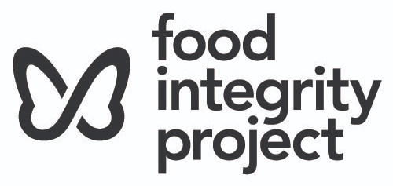
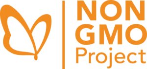
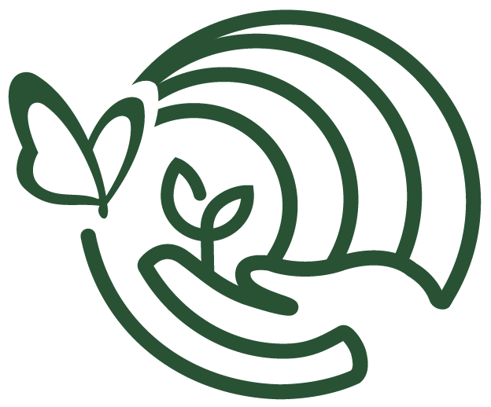
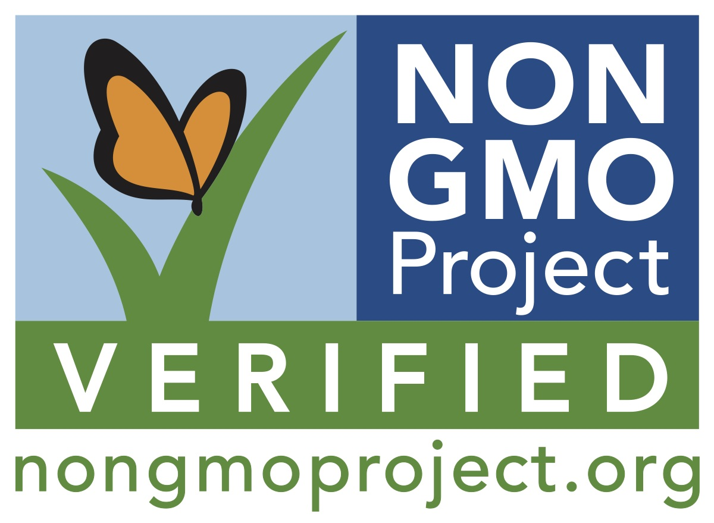
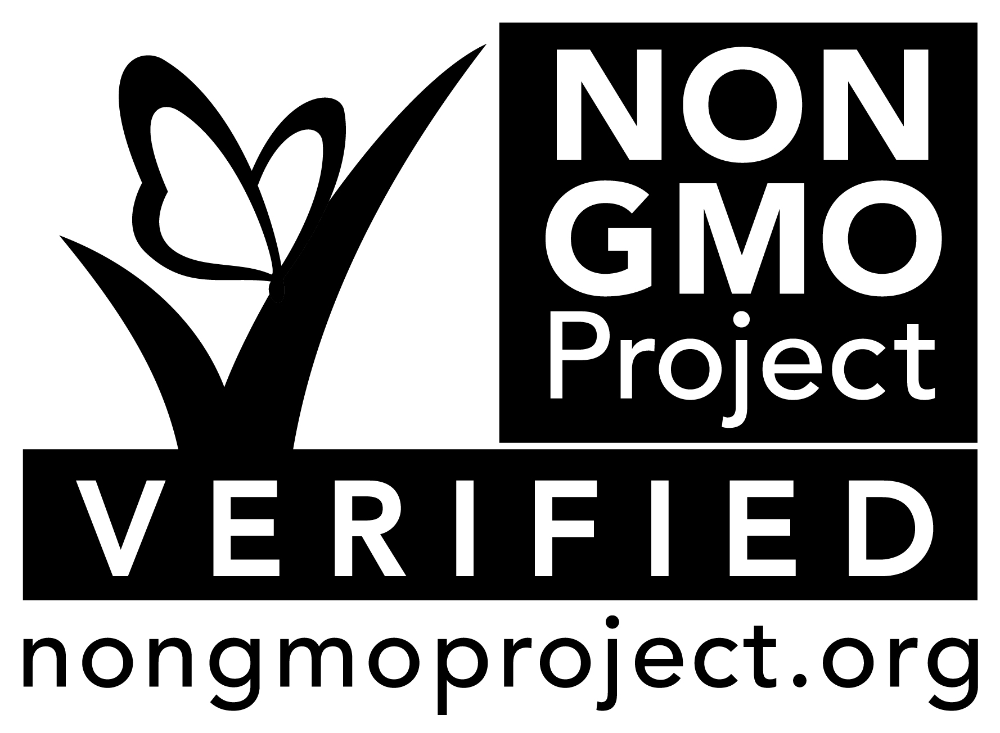
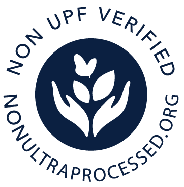

Food Integrity Project
Food Integrity ProjectParent organization, institutional voice. Governance, funding, policy, employer brand
Speaks to: Funders, partners, press, policy audiences, staff, job seekers
data-brand="fip"

Design system v0.2Design system · version 0.2 (draft for review)
There is one shared system (Birch ground, type, spacing, components, icons, motion, accessibility) and four brand contexts layered on top (Food Integrity Project, Non-GMO Project, Non-UPF Verified, Food Integrity Collective). Each brand is one dark for type, one supporting tint and one signature color on a Birch ground. Brands change color, logo, imagery and tone of voice. They do not change how a button works, how a form validates or how a dialog opens. In code, a brand context is a data-brand attribute on a wrapper; components read semantic tokens and adapt automatically.
Generated from README.md
Food Integrity Project Style Guide (draft for review). Where this system and the older per-program guides disagree, the Food Integrity Project Style Guide wins, and accessibility wins over both.
08-accessibility.md, accessibility wins.#FFFDEB. Never substitute pure white.06-ui-framework.md for the component that fits the interaction type. Build custom only when nothing fits, and build on the same primitives.Everything the build checks is passing.
01 · Brand architecture
Generated from 01-brand-architecture.md
The Food Integrity Project is the canopy over three symbiotic programs, each with its own audience and reputation. This file explains how the brands relate, what they share, what changes between them, and how to decide which brand an interface speaks for. Source: Food Integrity Project Style Guide, section 01.
Parent organization, institutional voice. Governance, funding, policy, employer brand
Speaks to: Funders, partners, press, policy audiences, staff, job seekers
data-brand="fip"

Consumer-facing seal. The established mark, with the highest recognition; leads on pack and in retail
Speaks to: Shoppers, brands seeking verification, retailers, Technical Administrators
data-brand="nongmo"
Consumer-facing seal. The newer standard, deliberately distinct so the two seals never read as one
Speaks to: Shoppers avoiding ultra-processed food, whole-food brands, retailers, researchers
data-brand="nonupf"

Membership and advocacy. Speaks to industry and members rather than shoppers. Softer, editorial
Speaks to: Members, industry partners, advocates, event attendees
data-brand="collective"
| Program leads | Parent leads |
|---|---|
| Packaging, retail, shopper marketing, standard documentation, verification communications. The parent appears only as a small endorsement line, if at all | Annual reports, funder and policy communications, careers and recruiting, press releases about the organization, corporate email signatures |
fip is fine as an internal code name.)| Element | Shared across all brands | Varies by brand |
|---|---|---|
| Color | Birch ground, Frost utility neutral, Stone, status colors, chart palette | The one dark, the supporting tint, the signature |
| Logo | Placement rules, clear space, minimum sizes, file naming, endorsement rules | The logo itself, favicon, social avatar |
| Certification seals | Usage rules | The seal artwork (one per verification program) |
| Typography | Lora, Avenir (Nunito Sans on web), Quicksand; the scale; context pairings | Nothing |
| Icons | Library, registry, sizes, stroke | Nothing. Icons inherit the brand dark |
| Components | All behavior, structure, states, spacing | Colors only, through tokens |
| Motion | All durations, easing, named animations | One optional variation of the signature moment |
| Accessibility | Everything | Nothing |
| Imagery | Photography principles | Subjects and mood (see brand files) |
| Voice | Plain language, UI writing rules | Personality (see brand files) |
Birch is the family resemblance. Any layout that starts on Birch already belongs to the group, whichever program fills it.
Ask "who is this surface speaking for, and who is it speaking to?"
| Surface | Brand context | Why |
|---|---|---|
| Organization website home, about, leadership, annual report, careers | fip | Parent leads |
| Staff tools and the internal operating system | fip | Staff work across all programs |
| Technical Administrator portal (works across programs) | fip chrome, program chips on records | Users handle more than one program |
| Non-GMO Project product finder, verification pages, brand enrollment | nongmo | Program leads |
| Non-UPF Verified consumer pages, scanning app, standards pages | nonupf | Program leads |
| Collective membership, events, advocacy, member portal | collective | Program leads |
| "Our programs" page comparing all three | fip page, each program card in its own context | House level with equal programs |
| Email from a program | That program | |
| Donation flow | fip unless the campaign is for one program | TODO(brand): confirm |
When unsure, use fip. The house context is always correct, just less specific.
Records in multi-program views carry a chip that sets its own data-brand. Chips use the subtle tint and the dark, never the signature color.
Every program surface carries the endorsement once, usually in the footer: A program of the Food Integrity Project.
04 · Logos and marks
Generated from 04-logos-and-marks.md
This file sets how logos and certification seals are stored, chosen and placed. It contains no logo artwork. The files live in public/brand/ and come from the design team. Source for the rules: Food Integrity Project Style Guide, section 04, plus each program's trademark guide.
| Organizational logo | Certification seal | |
|---|---|---|
| What it says | "This is us" | "This product meets a standard" |
| Examples | Food Integrity Project logo, Non-GMO Project logo, Collective mark | Non-GMO Project Verified, Non-UPF Verified |
| Where it appears | Headers, footers, emails, social, documents | Product packaging (under license), verified product pages, education about the seal |
| Governed by | This design system | This design system and the program's licensing and trademark rules |
Every file listed in the doc, rendered from public/brand/. Light files sit on the brand dark.
fip/fip-logo-horizontal-color.pngFood Integrity Project · logo · color · 500×237pxRaster pulled from the style guide PDF. Replace with SVG in Cacaonongmo/nongmo-logo-horizontal-color.pngNon-GMO Project · logo · color · 300×142pxRaster, 300px wide
nongmo/nongmo-seal-verified-color.jpgNon-GMO Project · seal · color · 1200×879pxOfficial full-color seal
nongmo/nongmo-seal-verified-mono-dark.jpgNon-GMO Project · seal · mono-darkOfficial one-color sealnonupf/nonupf-seal-verified-color.pngNon-UPF Verified · seal · color · 445×330pxPrimary rectangular mark, Dragon Fruitnonupf/nonupf-seal-verified-mono-dark.pngNon-UPF Verified · seal · mono-dark · 441×330pxPrimary mark, Dark Matternonupf/nonupf-seal-verified-mono-light.pngNon-UPF Verified · seal · mono-light · 446×332pxPrimary mark, white, for dark groundsnonupf/nonupf-seal-circular-color.pngNon-UPF Verified · seal · color · 363×364pxSecondary circular mark. Only when the primary cannot fit
nonupf/nonupf-seal-circular-mono-dark.pngNon-UPF Verified · seal · mono-dark · 362×367pxSecondary circular mark, Dark Matternonupf/nonupf-seal-circular-mono-light.pngNon-UPF Verified · seal · mono-light · 900×900pxSecondary circular mark, whitenonupf/nonupf-mark-color.pngNon-UPF Verified · mark · color · 512×512pxIcon in circle. Favicon and app icon only; the icon alone needs approval elsewherecollective/collective-mark-color.pngFood Integrity Collective · mark · color · 624×518pxGreen markcollective/collective-mark-mono-dark.pngFood Integrity Collective · mark · mono-dark · 633×542pxBlack markcollective/collective-mark-mono-light.pngFood Integrity Collective · mark · mono-light · 560×465pxWhite markTODO(design): SVG versions of every file above. PNG and JPG are stand-ins.TODO(design): Food Integrity Project logo in Cacao and reversed Birch, plus the mark alone (butterfly) for favicons.TODO(design): Non-GMO Project reversed logo and butterfly avatar.TODO(design): a Non-UPF Verified organizational logo. Today only the seal exists, and a seal is not a logo.TODO(design): a Food Integrity Collective wordmark or lockup. Today only the symbol exists. The older guide called this the umbrella mark; confirm it now belongs to the Collective.TODO(design): endorsement lockup files (horizontal and stacked) for each program.| Rule | Detail |
|---|---|
| Relative size | The parent mark is 40 to 50% of the program seal's height, and never larger than it |
| Separation | A hairline rule or a full clear-space gap always sits between the two marks, so they never read as one lockup |
| Color | In an endorsement, the parent mark is Cacao or reversed Birch only. It never adopts the program's accent |
| On pack | Certification seals appear alone on packaging. Endorsement lockups are for owned channels: sites, decks, signage, print |
Clear space: X = the cap height of the wordmark. Nothing enters this zone: no type, rule, image edge or other mark. For the Non-UPF Verified seal, X is the height of the capital "N" in "Non-UPF", measured from the outside of the keyline.
Minimum sizes:
| Asset | Screen minimum | Print minimum |
|---|---|---|
| Certification seal | 72px wide | 0.5 in (12.7 mm) wide |
| Parent mark (Food Integrity Project) | 96px wide | 0.75 in (19 mm) wide |
| Non-UPF Verified secondary (circular) seal | 60px wide | 0.375 in wide |
| Program horizontal logo | 120px wide | 30 mm wide |
| Mark only | 24px | 8 mm |
The seal URL (nongmoproject.org, nonultraprocessed.org) must stay readable at every allowed size.
02 · Color
Generated from 02-color.md
Color is the main way the house of brands tells people where they are. Typography, spacing, icons and motion stay shared; color and logos change. This file defines the named palette, the shared foundation, usage ratios, the tonal scales, the semantic layer that components use, and the rules for each brand.
| Part | What it is | Rule |
|---|---|---|
| Birch | #FFFDEB, the shared background | Default background for every brand, print and digital. Never substitute pure white. Any layout that starts on Birch already belongs to the family |
| One dark | Cacao, Forest or Dark Matter | Each brand has exactly one dark. It sets all body type and every inverted panel |
| Supporting tint | Loam, Seafoam, Almond or Corn Flower | Warms or structures the surface underneath |
| One signature | Milkweed Leaf, Monarch, Dragon Fruit or Romanesco | The color a viewer should name when asked which brand they just saw. Never more than about a tenth of a layout |
| Frost | #F3F4F2, the utility neutral | Interface and document furniture: table stripes, form fields, disabled states, data panels, image wells. Never a page ground, never counted in a brand ratio |
Select a swatch to copy its hex.
Read left to right: background, dark, supporting tint, signature accent. The accent never exceeds roughly a tenth of a layout. If a design needs more accent to feel alive, add contrast in scale or imagery instead. Frost sits outside every ratio on purpose.
The outlined step is the official color, kept exact. Ratios are against Birch.
| Token | Food Integrity Project | Non-GMO Project | Non-UPF Verified | Food Integrity Collective |
|---|---|---|---|---|
--background | birch | birch | birch | birch |
--foreground | cacao-950 | forest-900 | dark-matter-950 | forest-900 |
--muted-foreground | loam-700 | forest-700 | dark-matter-700 | forest-700 |
--primary | milkweed-600 | monarch-400 | dragonfruit-600 | romanesco-200 |
--primary-foreground | birch | forest-900 | birch | forest-900 |
--secondary | loam-100 | seafoam-100 | almond-200 | cornflower-200 |
--brand-dark | cacao-950 | forest-900 | dark-matter-950 | forest-900 |
--brand-tint | loam-50 | seafoam-50 | almond-50 | cornflower-50 |
--brand-subtle | loam-100 | seafoam-100 | almond-200 | cornflower-200 |
--brand-support | loam-700 | seafoam-100 | almond-200 | cornflower-400 |
--brand-signature | milkweed-600 | monarch-400 | dragonfruit-600 | romanesco-200 |
--border | loam-200 | forest-200 | dark-matter-200 | forest-200 |
--input | loam-600 | forest-600 | dark-matter-600 | forest-600 |
--field | frost | frost | frost | frost |
--ring | cacao-950 | forest-900 | dark-matter-950 | forest-900 |
--chart-1 | milkweed-600 | monarch-500 | dragonfruit-600 | cornflower-600 |
| Token | Food Integrity Project | Non-GMO Project | Non-UPF Verified | Food Integrity Collective |
|---|---|---|---|---|
--background | cacao-950 | forest-900 | dark-matter-950 | forest-900 |
--foreground | birch | birch | birch | birch |
--muted-foreground | cacao-200 | forest-200 | dark-matter-200 | forest-200 |
--primary | milkweed-600 | monarch-400 | dragonfruit-600 | romanesco-200 |
--primary-foreground | birch | forest-900 | birch | forest-900 |
--secondary | cacao-800 | forest-700 | dark-matter-800 | forest-700 |
--brand-dark | cacao-950 | forest-900 | dark-matter-950 | forest-900 |
--brand-tint | cacao-900 | forest-800 | dark-matter-900 | forest-800 |
--brand-subtle | cacao-800 | forest-700 | dark-matter-800 | forest-700 |
--brand-support | loam-700 | seafoam-100 | almond-200 | cornflower-400 |
--brand-signature | milkweed-600 | monarch-400 | dragonfruit-600 | romanesco-200 |
--border | cacao-800 | forest-700 | dark-matter-800 | forest-700 |
--input | cacao-500 | forest-400 | dark-matter-500 | forest-400 |
--field | cacao-900 | forest-800 | dark-matter-900 | forest-800 |
--ring | birch | birch | birch | birch |
--chart-1 | milkweed-600 | monarch-500 | dragonfruit-600 | cornflower-600 |
Status never changes by brand and never relies on color alone.
--gradient-hero--gradient-hero--gradient-hero--gradient-hero--gradient-ground--gradient-flight--gradient-harvest--gradient-gather| Series | Color | Value |
|---|---|---|
| Series 1 | --chart-1 | 42 |
| Series 2 | #E69F00 | 35 |
| Series 3 | #56B4E9 | 28 |
| Series 4 | #009E73 | 24 |
| Series 5 | #0072B2 | 19 |
| Series 6 | #D55E00 | 15 |
| Series 7 | #CC79A7 | 11 |
| Series 8 | stone-500 | 8 |
03 · Typography
Generated from 03-typography.md
--font-serifHeadlines by default. May set running text wherever reading is sustained: donor reports, essays, standards documents. Italic for pull quotesNever: Labels, buttons, table cells--font-sansRunning text, captions, tables and interface copy. May go large for statistics and pack callouts, with tracking tightened above 80px--font-accentEyebrows, labels, buttons and seal wordmarks. May carry the headline where a piece needs warmth over authorityNever: Paragraphs--font-monoCode, API keys, record IDs where character-level accuracy mattersNever: ProseDocuments and standards
Every verified product is reviewed against a published standard, and every claim can be traced back to it.
Lora + Avenir. The default. Authority first: Lora sets every headline, Avenir carries the argument
Campaign and member work
Every verified product is reviewed against a published standard, and every claim can be traced back to it.
Quicksand + Avenir. Warmth first. Quicksand takes the headline in sentence case above 60px; Lora sits out
Donor and editorial
Every verified product is reviewed against a published standard, and every claim can be traced back to it.
Lora + Quicksand. Lora sets both headline and body; Quicksand handles labels, captions and furniture
Rendered from the table. Change a size or weight in the doc and this updates.
| Public and program surfaces | Operational apps (staff, TA portal, internal tools) | |
|---|---|---|
| Headings h1 to h3 | Lora | Lora for page titles (h1, h2); Nunito Sans 700 for h3 and below in dense views |
| Body | Nunito Sans; Lora allowed for long-form articles and standards documents | Nunito Sans |
| Labels and buttons | Quicksand | Quicksand |
| Density | Generous. body 16px minimum | Compact allowed. Tables can use body-sm |
| Display size | Allowed, once per page | Not used |
| Eyebrows | Allowed above section heads | Rare. Use a plain h5 instead |
TODO(design): the brand guide does not address operational apps. Confirm Lora page titles and Nunito Sans sub-headings for staff tools.
Standards documents and policy pages are long-form reading: Lora body at body-lg, measure around 66 characters.
Measure. Keep running text between 45 and 75 characters per line. Set max-width: 66ch on prose containers. Never exceed 80.
Paragraphs. Body copy carries the argument; the headline only introduces it. Keep paragraphs to four or five lines on screen.
Weights. Lora at 500 for headings (never bold). Sans at 400 for body, 700 for sub-headings and stats. Quicksand at 600 for labels and eyebrows. Never use weights below 400 for text.
Case. Sentence case for headings, buttons, labels, navigation and table headers. The one exception is the eyebrow: Quicksand 600, uppercase, letter-spacing 0.18em, four words or fewer. Proper nouns keep their capitals (Non-GMO Project, Non-UPF Verified).
Hierarchy. Do not skip heading levels in markup. Visual size can be adjusted with classes, but h2 follows h1.
Emphasis. Use weight for emphasis in UI. Use italic in long-form for titles of works, pull quotes and genuine stress. Do not color a single word in a headline for effect.
Numbers. Use font-variant-numeric: tabular-nums in tables, stats and anything that updates live. Format with Intl.NumberFormat. Large statistics may be set in the sans at display size, tracking tightened (-0.02em) above 80px.
Links. Underlined in body text, --brand-text color. Navigation and buttons do not need underlines.
Alignment. Left-aligned by default. Center only short, standalone content (empty states, a single hero line, the stacked endorsement). Never justify.
Text over images. Only with a scrim or solid backing that keeps 4.5:1 contrast at every point.
05 · Iconography
Generated from 05-iconography.md
Lucide (lucide-react in apps, lucide-static for this showcase). It is the default icon set for shadcn/ui, it is open source (ISC license), every icon shares the same 24px grid and stroke style, and it covers both general UI and food and agriculture subjects (Wheat, Sprout, Leaf, ChefHat, FlaskConical, ScanBarcode). Its round caps and joins sit comfortably next to Quicksand's rounded terminals.
Code refers to icons by purpose. Every name below is resolved against the installed Lucide version.
action.addPlusaction.editPencilaction.deleteTrash2action.archiveArchiveaction.duplicateCopyPlusaction.copyCopyaction.downloadDownloadaction.uploadUploadaction.exportFileDownaction.shareShare2action.refreshRefreshCwaction.filterListFilteraction.sortArrowUpDownaction.searchSearchaction.moreEllipsisaction.closeXaction.confirmCheckaction.externalExternalLinkaction.printPrinternav.homeHousenav.dashboardLayoutDashboardnav.menuMenunav.backArrowLeftnav.forwardArrowRightnav.expandChevronDownnav.collapseChevronUpnav.nextChevronRightnav.previousChevronLeftnav.settingsSettingsnav.helpCircleHelpnav.notificationsBellnav.accountCircleUsernav.sign-outLogOutstatus.successCircleCheckstatus.warningTriangleAlertstatus.errorCircleAlertstatus.infoInfostatus.loadingLoaderCirclestatus.verifiedBadgeCheckstatus.in-progressCircleDashedstatus.pendingClockstatus.expiringCalendarClockstatus.lapsedCircleXstatus.not-eligibleBanstatus.withdrawnCircleMinusstatus.lockedLockdomain.productPackagedomain.brandTagdomain.companyBuilding2domain.facilityFactorydomain.retailerStoredomain.ingredientWheatdomain.cropSproutdomain.geneticsDnadomain.lab-testFlaskConicaldomain.inspectionMicroscopedomain.standardFileCheckdomain.complianceShieldCheckdomain.reviewClipboardCheckdomain.supply-chainTruckdomain.relationshipNetworkdomain.scanScanBarcodedomain.kitchenChefHatdomain.mealUtensilsdomain.shopperShoppingBasketdomain.invoiceReceiptdomain.paymentCreditCarddomain.donateHandHeartdomain.communityHeartHandshakedomain.eventCalendarDaysdomain.campaignMegaphonedomain.learningGraduationCapdomain.documentFileTextdomain.aiSparklesperson.singleUserperson.groupUserscontact.emailMailcontact.phonePhonecontact.messageMessageSquarecontact.locationMapPincontact.websiteGlobePair icons with text. Icons support labels; they rarely replace them. Icon-only buttons are allowed only for universally understood actions (close, more, search, edit in a dense table row), and they must have an aria-label and a tooltip.
One meaning per icon. Do not reuse action.delete's icon for "remove from list" unless it really deletes. Use action.close for removing a filter chip.
Decorative icons are hidden. When an icon sits next to text that says the same thing, add aria-hidden="true".
Do not decorate headings. No icon in front of every heading or every card. Use icons where they help people scan or recognize.
AI disclosure. Any content generated or summarized by AI shows domain.ai with a label such as "AI summary".
Icons are not illustrations. Non-GMO Project's fine-line botanical drawings are illustration assets (public/brand/nongmo/illustrations/), used with restraint between content blocks. They are never shrunk into icons.
06 · UI framework
Generated from 06-ui-framework.md
| Variant | Default | Hover | Focus | Pressed | Disabled |
|---|---|---|---|---|---|
default | |||||
secondary | |||||
outline | |||||
ghost | |||||
destructive | |||||
link |
Product
Brightfield Mills · Grains
VerifiedUses --brand-support: Loam, Seafoam, Almond or Corn Flower.
Inverted panel
Sets every inverted panel.
Brightfield Mills
VerifiedThe seal appears only because this product is currently verified.
The Verification team is reviewing 3 ingredients. We will email you when it is done.
Heritage Rolled Oats is now in review.
Renew before then to keep the seal on pack.
The file is larger than 20 MB. Compress it or upload a PDF instead.
5 products
| Select | Product | Program | Status | Units | Actions |
|---|---|---|---|---|---|
| Heritage Rolled Oats Brightfield Mills | Non-GMO Project | Verified | 1,200 | ||
| Stone-Ground Corn Tortillas Casa Maíz | Non-UPF Verified | Pending review | 1,517 | ||
| Sprouted Lentil Pasta Good Acre Foods | Non-GMO Project | Expires Dec 1, 2026 | 1,834 | ||
| Cultured Oat Butter Northfold Dairy | Non-UPF Verified | Lapsed | 2,151 | ||
| Wildflower Honey Hive & Hollow | Non-GMO Project | In progress | 2,468 |
Rolled oats from a single mill, tested for GMO markers every lot.
Whole grain oats. That is the whole list.
Products you submit for verification will appear here.
| Interaction | Component | Rules |
|---|---|---|
| Main action on a screen or in a region | Button variant default (primary) | One per region. It is where the brand signature appears, so it is also the "single point of emphasis". Verb first: "Save changes", "Submit product" |
| Alternative action | Button variant secondary or outline | |
| Low-emphasis or repeated action (table rows, toolbars) | Button variant ghost | |
| Destructive action | Button variant destructive + AlertDialog | Always confirm. Name what will be lost |
| Navigation that looks like an action | Button asChild wrapping Link | Use links for navigation, buttons for actions |
| Several related actions on one item | DropdownMenu behind action.more | Put the most common one outside the menu |
| Toggle a view option on and off | Toggle or ToggleGroup | |
| Keyboard-first power actions (staff apps) | Command palette, opened with Cmd/Ctrl + K |
| Interaction | Component | Rules |
|---|---|---|
| Short free text | Input | Always with a visible Label |
| Long free text | Textarea | Show character limits before people hit them |
| Pick one of 2 to 5 options, all visible | RadioGroup | |
| Pick one of 6 to 15 options | Select | |
| Pick one of many, or searchable | Combobox (Popover + Command) | Use for brands, facilities, ingredients |
| Pick several of a few | Checkbox group | |
| Pick several of many | Multi-select combobox with chips | |
| On/off setting that applies immediately | Switch | |
| Yes/no inside a form that is submitted later | Checkbox | |
| A date | DatePicker (Popover + Calendar) | Also accept typed dates |
| A date range | DateRangePicker | |
| A number with bounds | Input type="number" with inputMode | Show units outside the field |
| A file | FileDropzone (domain component) | Show accepted types and size limit up front; show upload progress |
| A product barcode (mobile) | BarcodeScanner (domain component) | Always offer manual entry as a fallback |
| Verify a code (one-time password) | InputOTP |
| Interaction | Component | Rules |
|---|---|---|
| A list of records to scan, sort, filter | DataTable (TanStack + Table) | Sticky header, pagination or virtual scroll over 100 rows |
| A grid of things to browse (products, events) | Card grid | Cards only when items are visual or heterogeneous; otherwise use a list or table |
| Key numbers | StatCard | Number in data style, label, comparison period |
| Status of a record | StatusBadge | Color + icon + label, always |
| Which program a record belongs to | ProgramChip | See 01-brand-architecture.md |
| Progress through a known amount of work | Progress | |
| Steps in a process | Stepper (domain component) | Real sequences only |
| History of events | Timeline (domain component) | |
| Trends, comparisons | Chart | Label series directly; include a data table alternative |
| A person or organization | Avatar | Initials fallback |
| Interaction | Component | Rules |
|---|---|---|
| Switch between views of the same thing | Tabs | 2 to 6 tabs. Not for steps |
| Show and hide sections in place | Accordion or Collapsible | For FAQs, settings groups, long forms |
| Short hint on hover or focus | Tooltip | Non-essential only. Never put required information in a tooltip |
| Richer preview on hover | HoverCard | Preview of a linked record |
| Small interactive panel tied to a control | Popover | Filters, quick edits |
| Focused task that blocks the page | Dialog | Short tasks. Title states the task |
| Confirm a consequential choice | AlertDialog | Buttons repeat the action: "Delete product", not "OK" |
| Edit or inspect alongside the page | Sheet (side panel) | Record details from a table |
| Same as Sheet on mobile | Drawer (bottom) |
| Interaction | Component | Rules |
|---|---|---|
| App-level navigation (staff, portal) | Sidebar (shadcn) | Collapsible to icons; labels in tooltips when collapsed |
| Site navigation (public) | NavigationMenu | Top bar; collapses to Sheet on mobile |
| Where am I in a hierarchy | Breadcrumb | Apps and deep content only |
| Move through pages of results | Pagination | Show total count |
| Jump anywhere | Command palette | Staff apps |
| Interaction | Component | Rules |
|---|---|---|
| Confirm something just happened | Toast (Sonner) | Past tense of the action: "Product submitted". Include Undo when possible |
| A problem or notice tied to a page or section | Alert | Stays until resolved. Says what happened and what to do |
| A problem with one field | Inline FormMessage | Under the field, linked with aria-describedby |
| Loading content | Skeleton | Shape of the real content. Not for under 300ms |
| Loading after an action | Button loading state | Spinner replaces icon, label stays, button disabled |
| Nothing here yet | EmptyState (domain component) | Say what will appear and offer the action that creates it |
14px · Icon to text in tight places28px · Inside controls, icon gaps312px · Between related small items416px · Default gap, card padding (compact)624px · Card padding, gap between form fields832px · Between groups1248px · Between sections (apps)16 to 2464 to 96px · Between sections (public pages)rounded-smInputs, checkboxes, badges, chipsrounded-mdButtons, cards, menus, popoversrounded-lgDialogs, sheets, large feature panelsrounded-fullAvatars, switches, program chip dots, pills| Public and program sites | Operational apps | |
|---|---|---|
| Audience | Shoppers, brands, members, press | Staff, Technical Administrators, partners |
| Shell | Top navigation, footer with endorsement | Sidebar, top bar, no marketing footer |
| Density | Comfortable | Comfortable default, compact option for tables |
| Brand presence | Strong: follow the usage ratios, inverted hero, imagery | Quiet: Birch, the brand dark for type, signature only on primary actions |
| Motion | One orchestrated page moment allowed | Responsive to actions only |
Empty state. Icon (icon-2xl, muted), one sentence saying what will appear here, one primary action that creates it. No jokes, no illustrations of sad boxes.
Error state. Says what went wrong in plain words, what the person can do, and offers a retry. Never blames the person. Never just "Something went wrong".
Loading. Skeleton for content areas, spinner only inside buttons and small inline spots. Show skeletons only if loading takes more than 300ms.
Confirmation. Destructive or hard-to-undo actions confirm with AlertDialog. Everything else acts immediately and offers Undo in the toast.
Search and filter. Search input first, filter button opens a Popover (desktop) or Sheet (mobile), active filters show as removable chips, results count updates live with aria-live="polite".
Multi-step flows. Stepper with named steps, progress saved per step, Back never loses data, final review step before submit.
Program footer. Program logo, the endorsement line "A program of the Food Integrity Project", links, legal. On the brand dark.
07 · Motion
Generated from 07-motion.md
Motion in this system answers people. When someone opens, closes, saves, filters or confirms something, motion shows what changed and where it went. Motion does not decorate, does not loop for attention, and switches off for anyone who asks their device for less motion.
--duration-instant0msState changes that need no transition (checkbox tick color)
--duration-fast120msHover, press, focus, small color and opacity changes
--duration-base200msMost UI: dropdowns, tooltips, toggles, accordions
--duration-moderate280msDialogs, sheets, toasts, tab content
--duration-slow400msPage-level transitions, large layout changes
--duration-deliberate640msThe signature moment only
--ease-standardThings that move or resize on screen
--ease-enterThings appearing (decelerate into place)
--ease-exitThings leaving (accelerate away)
--ease-emphasizedSlight overshoot. Signature moment and success confirmations only
| Name | Config | Use |
|---|---|---|
spring.snappy | { type: "spring", stiffness: 500, damping: 35 } | Layout shifts, reordering, toggles |
spring.gentle | { type: "spring", stiffness: 260, damping: 30 } | Sheets, drawers, shared element moves |
Each demo reads its duration and easing tokens live, so changing them in 09-tokens.md changes the demo.
fade-in / fade-outbase, enter / exitOpacity 0 to 1
Trigger: Tooltips, overlays (backdrop)
pop-inbase, enterOpacity + scale 0.96 to 1
Trigger: Dropdowns, popovers, combobox lists, from their trigger origin
dialog-inmoderate, enterOpacity + scale 0.98 to 1 + 4px rise
Trigger: Dialog, AlertDialog open
sheet-inmoderate, spring.gentleSlide from its edge
Trigger: Sheet, Drawer open
toast-inmoderate, enterSlide 8px from its stack edge + fade
Trigger: Toast appears
expand / collapsebase, standardHeight auto + fade content
Trigger: Accordion, Collapsible, "show more"
tab-switchbase, standardIndicator slides; content cross-fades
Trigger: Tab change
row-enterbase, then 1000ms linearNew row fades in with brand-subtle background that fades out over 1s
Trigger: A record is added to a list or table
row-exitbase, exitRow fades and collapses height
Trigger: A record is deleted or archived
reorderspring.snappyItems glide to new positions
Trigger: Sorting, drag and drop
pressfast, standardScale to 0.98
Trigger: Pointer down on buttons and cards that act
hover-liftfast, standardShadow 1 to 2
Trigger: Hover on interactive cards only (not static cards)
focus-ringinstantRing appears
Trigger: Keyboard focus
skeleton1.5s loopGentle opacity pulse 1 to 0.6
Trigger: Loading placeholders
spin0.8s linear loopRotation
Trigger: status.loading icon in buttons
status-changemoderate, emphasizedBadge cross-fades to new status, icon scales 0.9 to 1
Trigger: A record's status changes while on screen
field-errorbase, enterError message fades in under field; no shake
Trigger: Validation fails
page-enterslow, enterContent fades in with 8px rise, one time
Trigger: Route change on public pages only
"Verified." When a verification turns to Verified while someone is watching (a reviewer approves, a brand sees the result), the status badge plays one short sequence: the badge-check icon draws its stroke, the badge settles from scale 0.94 to 1 with --ease-emphasized, and a glow in --brand-signature blooms once behind it and fades. Total 640ms. It plays once per event, never on page load, never in lists of many records.
This is the one place the system allows delight. The glow takes each brand's signature (a Monarch flutter for Non-GMO Project, Dragon Fruit for Non-UPF Verified), but the shape and timing stay the same. The badge itself keeps status colors. Seals are never animated.
When prefers-reduced-motion: reduce is set:
09-tokens.md).skeleton pulse stops; skeletons show static.spin keeps running, slowed, because a still spinner looks broken. Pair it with "Loading" text.<MotionConfig reducedMotion="user">.08 · Accessibility
Generated from 08-accessibility.md
Target: WCAG 2.2 Level AA, for every brand and every surface, public or internal. Staff tools are not exempt; staff and partners include people with disabilities too.
| Requirement | Where it is handled |
|---|---|
| Text contrast 4.5:1 (3:1 for large text) | Approved pairings in 02-color.md, computed against Birch; the showcase audits every semantic pairing in every brand and mode |
| Non-text contrast 3:1 (input borders, focus rings, icons that carry meaning) | --input is the brand dark family at 600 (4.2:1 or more on Frost); --ring is the brand dark, or Birch in dark mode |
| Color is not the only signal | Status = color + icon + label (StatusBadge); links are underlined |
| Keyboard access and focus management | Radix primitives under shadcn/ui |
| Visible focus | 2px ring with offset on every interactive element, never removed |
| Reduced motion | Token durations collapse to 0; see 07-motion.md |
| Text resize to 200% | rem-based type scale; no fixed-height text containers |
| Minimum text size | Body never below 16px on the web (also a brand guide rule) |
| Consistent navigation and identification | Shared components and icon registry across brands |
Every semantic text and UI pairing, resolved from 09-tokens.md for each brand and mode and measured against WCAG 2.2 AA. This runs on every build.
| Pairing | Min | Food Integrity Project | Non-GMO Project | Non-UPF Verified | Food Integrity Collective |
|---|---|---|---|---|---|
Body text--foreground / --background | 4.5:1 | 16.6:1 | 13.8:1 | 15.8:1 | 13.8:1 |
Text on cards--card-foreground / --card | 4.5:1 | 16.6:1 | 13.8:1 | 15.8:1 | 13.8:1 |
Help text--muted-foreground / --background | 4.5:1 | 6.7:1 | 7.1:1 | 6.4:1 | 7.1:1 |
Help text on Frost panels--muted-foreground / --muted | 4.5:1 | 6.2:1 | 6.6:1 | 5.9:1 | 6.6:1 |
Primary button--primary-foreground / --primary | 4.5:1 | 4.6:1 | 5.6:1 | 5.1:1 | 9.3:1 |
Primary button, hover--primary-foreground / --primary-hover | 4.5:1 | 6.4:1 | 7.8:1 | 7.1:1 | 7.4:1 |
Secondary button--secondary-foreground / --secondary | 4.5:1 | 14.4:1 | 11.6:1 | 12.6:1 | 10.6:1 |
Links--brand-text / --background | 4.5:1 | 16.6:1 | 13.8:1 | 15.8:1 | 13.8:1 |
Text on brand tint--foreground / --brand-tint | 4.5:1 | 15.7:1 | 13.2:1 | 15.0:1 | 13.1:1 |
Help text on brand tint--muted-foreground / --brand-tint | 4.5:1 | 6.4:1 | 6.8:1 | 6.1:1 | 6.7:1 |
Selected row--foreground / --brand-subtle | 4.5:1 | 14.4:1 | 11.6:1 | 12.6:1 | 10.6:1 |
Support panel--brand-support-foreground / --brand-support | 4.5:1 | 6.7:1 | 11.6:1 | 12.6:1 | 6.8:1 |
Signature fill--brand-signature-foreground / --brand-signature | 4.5:1 | 4.6:1 | 5.6:1 | 5.1:1 | 9.3:1 |
Destructive button--destructive-foreground / --destructive | 4.5:1 | 5.8:1 | 5.8:1 | 5.8:1 | 5.8:1 |
Input border on page--input / --background | 3:1 | 4.7:1 | 4.9:1 | 4.5:1 | 4.9:1 |
Input border on field--input / --field | 3:1 | 4.4:1 | 4.6:1 | 4.2:1 | 4.6:1 |
Focus ring--ring / --background | 3:1 | 16.6:1 | 13.8:1 | 15.8:1 | 13.8:1 |
Status success text--status-success-fg / --status-success-bg | 4.5:1 | 8.8:1 | 8.8:1 | 8.8:1 | 8.8:1 |
Status success icon--status-success-icon / --status-success-bg | 3:1 | 4.7:1 | 4.7:1 | 4.7:1 | 4.7:1 |
Status warning text--status-warning-fg / --status-warning-bg | 4.5:1 | 9.0:1 | 9.0:1 | 9.0:1 | 9.0:1 |
Status warning icon--status-warning-icon / --status-warning-bg | 3:1 | 4.7:1 | 4.7:1 | 4.7:1 | 4.7:1 |
Status danger text--status-danger-fg / --status-danger-bg | 4.5:1 | 10.0:1 | 10.0:1 | 10.0:1 | 10.0:1 |
Status danger icon--status-danger-icon / --status-danger-bg | 3:1 | 5.5:1 | 5.5:1 | 5.5:1 | 5.5:1 |
Status info text--status-info-fg / --status-info-bg | 4.5:1 | 9.4:1 | 9.4:1 | 9.4:1 | 9.4:1 |
Status info icon--status-info-icon / --status-info-bg | 3:1 | 5.1:1 | 5.1:1 | 5.1:1 | 5.1:1 |
Status neutral text--status-neutral-fg / --status-neutral-bg | 4.5:1 | 8.5:1 | 8.5:1 | 8.5:1 | 8.5:1 |
Status neutral icon--status-neutral-icon / --status-neutral-bg | 3:1 | 4.3:1 | 4.3:1 | 4.3:1 | 4.3:1 |
Birch text on hero gradientweakest stop | 4.5:1 | 9.4:1 | 10.1:1 | 12.3:1 | 10.1:1 |
| Pairing | Min | Food Integrity Project | Non-GMO Project | Non-UPF Verified | Food Integrity Collective |
|---|---|---|---|---|---|
Body text--foreground / --background | 4.5:1 | 16.6:1 | 13.8:1 | 15.8:1 | 13.8:1 |
Text on cards--card-foreground / --card | 4.5:1 | 13.2:1 | 10.1:1 | 12.3:1 | 10.1:1 |
Help text--muted-foreground / --background | 4.5:1 | 12.1:1 | 10.1:1 | 11.7:1 | 10.1:1 |
Help text on Frost panels--muted-foreground / --muted | 4.5:1 | 9.7:1 | 7.4:1 | 9.1:1 | 7.4:1 |
Primary button--primary-foreground / --primary | 4.5:1 | 4.6:1 | 5.6:1 | 5.1:1 | 9.3:1 |
Primary button, hover--primary-foreground / --primary-hover | 4.5:1 | 6.4:1 | 7.8:1 | 7.1:1 | 7.4:1 |
Secondary button--secondary-foreground / --secondary | 4.5:1 | 9.6:1 | 7.1:1 | 9.0:1 | 7.1:1 |
Links--brand-text / --background | 4.5:1 | 16.6:1 | 13.8:1 | 15.8:1 | 13.8:1 |
Text on brand tint--foreground / --brand-tint | 4.5:1 | 13.2:1 | 10.1:1 | 12.3:1 | 10.1:1 |
Help text on brand tint--muted-foreground / --brand-tint | 4.5:1 | 9.7:1 | 7.4:1 | 9.1:1 | 7.4:1 |
Selected row--foreground / --brand-subtle | 4.5:1 | 9.6:1 | 7.1:1 | 9.0:1 | 7.1:1 |
Support panel--brand-support-foreground / --brand-support | 4.5:1 | 6.7:1 | 11.6:1 | 12.6:1 | 6.8:1 |
Signature fill--brand-signature-foreground / --brand-signature | 4.5:1 | 4.6:1 | 5.6:1 | 5.1:1 | 9.3:1 |
Destructive button--destructive-foreground / --destructive | 4.5:1 | 6.1:1 | 6.1:1 | 6.1:1 | 6.1:1 |
Input border on page--input / --background | 3:1 | 4.9:1 | 5.7:1 | 4.8:1 | 5.7:1 |
Input border on field--input / --field | 3:1 | 3.9:1 | 4.1:1 | 3.8:1 | 4.1:1 |
Focus ring--ring / --background | 3:1 | 16.6:1 | 13.8:1 | 15.8:1 | 13.8:1 |
Status success text--status-success-fg / --status-success-bg | 4.5:1 | 11.5:1 | 11.5:1 | 11.5:1 | 11.5:1 |
Status success icon--status-success-icon / --status-success-bg | 3:1 | 6.5:1 | 6.5:1 | 6.5:1 | 6.5:1 |
Status warning text--status-warning-fg / --status-warning-bg | 4.5:1 | 11.6:1 | 11.6:1 | 11.6:1 | 11.6:1 |
Status warning icon--status-warning-icon / --status-warning-bg | 3:1 | 6.6:1 | 6.6:1 | 6.6:1 | 6.6:1 |
Status danger text--status-danger-fg / --status-danger-bg | 4.5:1 | 11.7:1 | 11.7:1 | 11.7:1 | 11.7:1 |
Status danger icon--status-danger-icon / --status-danger-bg | 3:1 | 6.3:1 | 6.3:1 | 6.3:1 | 6.3:1 |
Status info text--status-info-fg / --status-info-bg | 4.5:1 | 11.5:1 | 11.5:1 | 11.5:1 | 11.5:1 |
Status info icon--status-info-icon / --status-info-bg | 3:1 | 6.3:1 | 6.3:1 | 6.3:1 | 6.3:1 |
Status neutral text--status-neutral-fg / --status-neutral-bg | 4.5:1 | 9.2:1 | 9.2:1 | 9.2:1 | 9.2:1 |
Status neutral icon--status-neutral-icon / --status-neutral-bg | 3:1 | 5.4:1 | 5.4:1 | 5.4:1 | 5.4:1 |
h1 per page. Heading levels in order.header, nav, main, footer. One main per page.<title> describes the page, then the brand: "Verified products | Non-GMO Project".lang set on <html>; lang on any passage in another language.sm buttons (32px) are for dense desktop tables only.for / id.aria-describedby, announced, and say how to fix the problem.alt="".aria-live="polite". Errors that block progress use role="alert".prefers-reduced-motion.| Brand | Risk | Rule |
|---|---|---|
| All | Birch is close to white, so tints read as almost nothing | Separate surfaces with --border and elevation, not by tint alone |
| All | Eyebrows are uppercase and tracked | Four words or fewer; never for essential information; screen readers get the same text in sentence case if it reads oddly |
| Food Integrity Project | Milkweed Leaf with Birch text is 4.6:1, close to the limit | Never lighten the primary or set its label below 15px; use milkweed-700 for hover |
| Food Integrity Project | Milkweed Leaf and success green are both green | Status always uses icon + label. Never use the brand primary to mean "success" |
| Non-GMO Project | Monarch orange is close to warning amber | Monarch never means "warning". Warnings use the warning status set with its icon |
| Non-GMO Project and Collective | Monarch and Romanesco fail as text on Birch (2.4:1 and 1.4:1) | Fills, rules and large display only. Text on those fills is Forest |
| Non-GMO Project and Collective | They share Forest as their dark | Program identity comes from logo, tint and signature, never from the dark alone. Always show the program name |
| Non-UPF Verified | Dragon Fruit sits near danger red | Never use Dragon Fruit for errors, validation or anything near form fields. Errors use the danger status set |
| Food Integrity Collective | Corn Flower fails as text (2.0:1) | Panels, charts and shapes only |
| Food Integrity Collective | The Romanesco primary is a light fill on Birch (1.4:1) | The label carries the meaning. Never make a Romanesco button icon-only; keep the visible focus ring |
| When | How |
|---|---|
| While building | eslint-plugin-jsx-a11y; Storybook a11y addon if Storybook is used |
| Every build of this repo | npm run check recomputes every documented contrast ratio and the semantic-pairing audit |
| Every pull request | Automated axe checks with @axe-core/playwright on key pages, in light and dark, for each brand context |
| Before release | Keyboard-only pass; screen reader pass (VoiceOver on Safari, NVDA on Firefox or Chrome); 200% zoom and 320px width check |
| Quarterly | Review with people who use assistive technology. TODO(design): set up a panel or partner. |
09 · Tokens
Generated from 09-tokens.md
<!-- House level (default) -->
<html data-brand="fip">
<!-- A section or whole app scoped to one program -->
<div data-brand="nongmo"> ... </div>
<!-- Dark mode, independent of brand -->
<html class="dark" data-brand="nonupf">Brand contexts nest. A Non-GMO Project card inside a house-level page sets data-brand="nongmo" on the card wrapper, and every component inside picks up the right colors. In Next.js, set the attribute in the route group layout for each brand (for example app/(nongmo)/layout.tsx), not on individual components.
data-brand="fip" is an internal code name. External copy never abbreviates the parent to "FIP" (see 01-brand-architecture.md).
Download tokens.cssPlain CSS, generated from 09-tokens.md. Works with or without Tailwind.
Values are read live from the page, so they change with the brand and dark mode switches.
| Token | Current value |
|---|---|
--background | |
--card | |
--popover | |
--muted | |
--accent | |
--field | |
--destructive | |
--destructive-foreground | |
--status-success-bg | |
--status-success-fg | |
--status-success-border | |
--status-success-icon | |
--status-warning-bg | |
--status-warning-fg | |
--status-warning-border | |
--status-warning-icon | |
--status-danger-bg | |
--status-danger-fg | |
--status-danger-border | |
--status-danger-icon | |
--status-info-bg | |
--status-info-fg | |
--status-info-border | |
--status-info-icon | |
--status-neutral-bg | |
--status-neutral-fg | |
--status-neutral-border | |
--status-neutral-icon | |
--chart-2 | |
--chart-3 | |
--chart-4 | |
--chart-5 | |
--chart-6 | |
--chart-7 | |
--chart-8 | |
--radius | |
--elevation-1 | |
--elevation-2 | |
--elevation-3 | |
--elevation-4 | |
--duration-instant | |
--duration-fast | |
--duration-base | |
--duration-moderate | |
--duration-slow | |
--duration-deliberate | |
--foreground | |
--card-foreground | |
--popover-foreground | |
--accent-foreground | |
--muted-foreground | |
--border | |
--input | |
--primary | |
--primary-foreground | |
--primary-hover | |
--secondary | |
--secondary-foreground | |
--brand-dark | |
--brand-text | |
--brand-tint | |
--brand-subtle | |
--brand-border | |
--brand-support | |
--brand-support-foreground | |
--brand-signature | |
--brand-signature-foreground | |
--ring | |
--chart-1 | |
--gradient-hero | |
--gradient-ground |
Tailwind v4 reads tokens from CSS with @theme. inline makes the utilities reference the live variable, so brand switching works at runtime.
@import "tailwindcss";
@import "tw-animate-css";
@custom-variant dark (&:is(.dark *));
@theme inline {
--color-background: var(--background);
--color-foreground: var(--foreground);
--color-card: var(--card);
--color-card-foreground: var(--card-foreground);
--color-popover: var(--popover);
--color-popover-foreground: var(--popover-foreground);
--color-primary: var(--primary);
--color-primary-foreground: var(--primary-foreground);
--color-primary-hover: var(--primary-hover);
--color-secondary: var(--secondary);
--color-secondary-foreground: var(--secondary-foreground);
--color-muted: var(--muted);
--color-muted-foreground: var(--muted-foreground);
--color-accent: var(--accent);
--color-accent-foreground: var(--accent-foreground);
--color-destructive: var(--destructive);
--color-destructive-foreground: var(--destructive-foreground);
--color-border: var(--border);
--color-input: var(--input);
--color-field: var(--field);
--color-ring: var(--ring);
--color-brand-dark: var(--brand-dark);
--color-brand-text: var(--brand-text);
--color-brand-tint: var(--brand-tint);
--color-brand-subtle: var(--brand-subtle);
--color-brand-border: var(--brand-border);
--color-brand-support: var(--brand-support);
--color-brand-support-foreground: var(--brand-support-foreground);
--color-brand-signature: var(--brand-signature);
--color-brand-signature-foreground: var(--brand-signature-foreground);
--color-birch: var(--birch);
--color-frost: var(--frost);
--color-status-success-bg: var(--status-success-bg);
--color-status-success-fg: var(--status-success-fg);
--color-status-success-border: var(--status-success-border);
--color-status-success-icon: var(--status-success-icon);
--color-status-warning-bg: var(--status-warning-bg);
--color-status-warning-fg: var(--status-warning-fg);
--color-status-warning-border: var(--status-warning-border);
--color-status-warning-icon: var(--status-warning-icon);
--color-status-danger-bg: var(--status-danger-bg);
--color-status-danger-fg: var(--status-danger-fg);
--color-status-danger-border: var(--status-danger-border);
--color-status-danger-icon: var(--status-danger-icon);
--color-status-info-bg: var(--status-info-bg);
--color-status-info-fg: var(--status-info-fg);
--color-status-info-border: var(--status-info-border);
--color-status-info-icon: var(--status-info-icon);
--color-status-neutral-bg: var(--status-neutral-bg);
--color-status-neutral-fg: var(--status-neutral-fg);
--color-status-neutral-border: var(--status-neutral-border);
--color-status-neutral-icon: var(--status-neutral-icon);
--color-chart-1: var(--chart-1);
--color-chart-2: var(--chart-2);
--color-chart-3: var(--chart-3);
--color-chart-4: var(--chart-4);
--color-chart-5: var(--chart-5);
--color-chart-6: var(--chart-6);
--color-chart-7: var(--chart-7);
--color-chart-8: var(--chart-8);
--shadow-1: var(--elevation-1);
--shadow-2: var(--elevation-2);
--shadow-3: var(--elevation-3);
--shadow-4: var(--elevation-4);
}
/* Static values that never change by brand or mode */
@theme {
--radius-sm: 0.25rem; /* inputs, badges, checkboxes, chips */
--radius-md: 0.5rem; /* buttons, cards, menus, popovers */
--radius-lg: 0.75rem; /* dialogs, sheets, large panels */
--font-serif: "Lora", Charter, "Bitstream Charter", Cambria, Georgia, serif;
--font-sans: "Nunito Sans", "Avenir Next", Avenir, system-ui, -apple-system, "Segoe UI", Roboto, sans-serif, "Apple Color Emoji", "Segoe UI Emoji";
--font-accent: "Quicksand", "Nunito Sans", system-ui, sans-serif;
--font-mono: ui-monospace, "Cascadia Code", "Source Code Pro", Menlo, Consolas, "DejaVu Sans Mono", monospace;
--ease-standard: cubic-bezier(0.2, 0, 0, 1);
--ease-enter: cubic-bezier(0, 0, 0.2, 1);
--ease-exit: cubic-bezier(0.4, 0, 1, 1);
--ease-emphasized: cubic-bezier(0.3, 0, 0, 1.15);
}Tailwind emits the @theme values as CSS variables too, so --font-serif and --ease-standard are available in plain CSS and in Motion code, under the names used in 03-typography.md and 07-motion.md.
In Next.js, load Lora, Nunito Sans and Quicksand with next/font/google (self-hosted at build time) and put the next/font variable first in each stack, for example --font-serif: var(--font-lora), "Lora", Charter, .... The showcase self-hosts the same three families from public/fonts/.
This produces utilities such as bg-primary, text-brand-text, bg-brand-support, bg-status-warning-bg, border-status-danger-border, shadow-2, rounded-lg, font-serif, font-accent, ease-standard.
--{name}-{step}. Lowercase, the official color name, steps 50 to 950 (--dark-matter-950, --milkweed-600).--{role} or --{role}-{part}. Named for the job, never the hue (--brand-signature, not --orange).Brand profiles
Each profile renders inside its own data-brand context, whatever the brand switch says.
Parent · data-brand="fip"
Parent organization and institutional voice. Governance, funding, policy, employer brand.
Generated from brands/food-integrity-project.md
The parent palette is marked proposed in the style guide. TODO(brand): confirm Cacao, Loam and Milkweed Leaf.
Funders and donors, partners across the food system, press, policy audiences, staff, job seekers, and anyone who works with more than one program.
Rigorous, calm, connective. It sounds like an organization that checks its work and explains its reasoning. It does not shout. It is the ground its programs grow from, not a fourth seal.
In use
Text on the supporting color, with the status badge and program chip that appear in this context.
Verified Food Integrity ProjectRatio: 60 Birch, 24 Cacao type, 6 Loam, 10 Milkweed Leaf.
Green is the one hue no program owns, and Milkweed Leaf sits opposite Monarch orange. Cacao is a warm near-black that matches Forest and Dark Matter in weight; it sets type. The guide says Cacao "is never a fill" but also that each brand's dark "sets every inverted panel"; this system allows Cacao for inverted hero bands and footers only. TODO(brand): confirm.
fip-logo-*. Parent mark in Cacao on Birch, or reversed to Birch on Cacao. In an endorsement the parent mark is Cacao or reversed Birch only, and 40 to 50% of the program seal's height. See ../04-logos-and-marks.md.
Close, textured views of the natural systems food depends on (the style guide's butterfly-wing macro), and wide views of working landscapes and food systems: fields, processing lines, labs, people at work. Real people, real places, natural light. Avoid stock "hands holding a seedling" clichés and anything that looks staged.
TODO(brand): photography library and approved image sources.
Plain, precise, evidence-first, unhurried. Names sources. Explains what a standard means in everyday terms. Uses "we" for the organization. Introduces programs in full on first mention: "Non-GMO Project, a program of the Food Integrity Project."
Documents and standards pairing by default (Lora + Avenir). Donor reports and the annual report use the editorial pairing (Lora + Quicksand).
Shared system. No signature moment of its own; the parent does not verify products.
Organization website, annual report, donation flows, careers, press, staff operating system, partner portal chrome, house-level "our programs" pages.
Program · data-brand="nongmo"
Consumer-facing seal. The established mark, with the highest recognition. Leads on pack and in retail. Runs Non-GMO Project Verified.
Generated from brands/non-gmo-project.md
Shoppers who look for the seal, brands and manufacturers seeking verification, Technical Administrators, retailers. Two shopper groups from earlier research: "Food as Medicine" (health and clean labels, cautious about technology) and "Agents of Intelligent Change" (younger, systemic impact, forward-looking).
Trustworthy, nurturing, confident, playful. Friendly to shoppers, exacting with brands. Respects all living things and conveys deep technical expertise in a warm, engaging way.
In use
Text on the supporting color, with the status badge and program chip that appear in this context.
Verified Non-GMO ProjectRatio: 55 Birch, 25 Forest, 12 Seafoam, 8 Monarch.
Forest carries type and structure; Monarch is reserved for a single point of emphasis per view. Seafoam fills panels and cards where Birch alone is too flat. Monarch on Birch fails contrast for body text: use it for fills, rules and large display only, never for paragraphs or small labels. Primary buttons are Monarch with Forest text (5.6:1).
nongmo-logo-* and nongmo-seal-verified-*. Four distinct assets: the organizational logo (butterfly + wordmark), the Verification Mark (the seal), the butterfly avatar for social profiles, and the trademarked Butterfly, used sparingly. The seal follows ../04-logos-and-marks.md and the Trademark User Guide. In product lists use StatusBadge status="verified"; reserve the seal for verified product detail pages and seal education.
Fine-line botanical illustrations are a signature element, used with restraint between content blocks and next to educational content (high-risk crops, new GMOs). They live in public/brand/nongmo/illustrations/. Photography: rich, warm, natural tones; food preparation, farming, family meals, grocery shopping, community; intentionally inclusive; a clear focal point; real, not staged.
TODO(design): confirm whether the butterfly can be used as a standalone illustration element outside the trademark rules.
Direct and reassuring. Active voice, plain language, short sentences. Explains what "verified" covers and what it does not. Avoids fear-based language about GMOs; states standards and facts. Messaging pillars: nature (humility), freedom (openness), change (positivity).
Shared system. The older Lora + Quicksand + Copperplate stack becomes the house stack (Lora + Avenir + Quicksand); Copperplate is retired.
Shared system. The signature "Verified" moment may use a single Monarch flutter in the glow.
Product and brand finder, seal education pages, brand enrollment and verification flows, Non-GMO Project emails.
#DF7838 or eggplant #221C35 in new work.Program · data-brand="nonupf"
Consumer-facing seal. The newer standard, for foods that are not ultra-processed. Deliberately distinct so the two seals never read as one.
Generated from brands/non-upf-verified.md
Shoppers trying to cook and eat less ultra-processed food, brands making whole-food products, retailers, researchers. Participants in consumer campaigns and research.
Fresh, practical, kitchen-honest, confident and evidence-based. Empowering, not alarmist. Sounds like someone who reads ingredient lists and cooks dinner.
In use
Text on the supporting color, with the status badge and program chip that appear in this context.
Verified Non-UPF VerifiedRatio: 55 Birch, 25 Dark Matter, 12 Almond, 8 Dragon Fruit.
Dark Matter replaces Forest as the type and structure color, which is what keeps this program visually separate from Non-GMO Project at shelf distance. Dragon Fruit is the seal color: keep it to the mark, headlines and single emphasis elements; Almond does the warming work underneath. Primary buttons are Dragon Fruit with Birch text (5.1:1).
nonupf-seal-*. Primary mark (rectangular) is preferred; the secondary circular mark only where the primary cannot fit. Every mark keeps all four parts: icon, wordmark, URL and keyline. Available in Dragon Fruit and single-color Dark Matter for one-color printing. The mark is for verified products only, never companies. It may not appear on a product with a bioengineered food disclosure. Minimum 72px wide on screen (60px for the circular mark).
TODO(design): Non-UPF Verified has no organizational logo yet, only the seal. Program headers use a text wordmark placeholder until one exists.
Kitchens, whole ingredients, short ingredient lists, real meals, grocery aisles. Vibrant, close macro shots of whole foods in natural light. A Dragon Fruit tint over photography is allowed for campaign sections, if text on it still passes 4.5:1. Avoid images that shame processed food or the people who eat it. No botanical illustration (that is Non-GMO Project's).
Practical and concrete: "Five ingredients you would recognize." Defines ultra-processed food clearly the first time. Stat-driven where evidence exists. Never moralizes. No exclusivity claims ("first", "only").
Shared system. Standards pages use the default Lora + Avenir pairing; consumer campaigns may use Quicksand + Avenir.
Shared system. The scanning experience uses status-change when a scan result arrives; the signature moment is reserved for actual verification events, not scans.
Consumer pages, the scanning app, standards and pre-evaluation pages, brand-facing evaluation flows, consumer campaign pages.
Program · data-brand="collective"
Membership and advocacy. Speaks to industry and members rather than shoppers. Softer, editorial.
Generated from brands/food-integrity-collective.md
The older Food Integrity Collective guide described the Collective as the umbrella organization. The current style guide makes the Food Integrity Project the parent and the Collective a program. TODO(brand): confirm the Collective's audiences and offerings under this structure.
Members, industry partners, advocates, event attendees, partner organizations.
Collegial, calm, editorial. Invites people in and gives them something to do. Grounded in standards and evidence, inclusive toward industry partners, consumers and advocates alike.
In use
Text on the supporting color, with the status badge and program chip that appear in this context.
Verified Food Integrity CollectiveRatio: 50 Birch, 25 Forest, 15 Corn Flower, 10 Romanesco.
The Collective shares Forest with Non-GMO Project but pairs it with two mid-tone accents rather than one hot accent, which gives it a calmer, more editorial surface. Corn Flower and Romanesco are both mid-tone: neither carries small text on Birch. Set type in Forest and let the accents hold shapes, charts and panels. Primary buttons are Romanesco with Forest text (9.3:1), matching the "Join us" button on the existing site.
collective-mark-*: the hand, sprout and butterfly symbol in green, black and white. No certification seal; the Collective does not verify products.
TODO(design): supply a Collective wordmark or lockup. Today only the symbol exists.
People together: markets, events, farms open to visitors, shared meals, community work, supply chains seen as systems. Natural, neutral tones without strong orange or magenta casts. Faces and activity over landscapes.
Collegial and specific. Uses "you" and "together". Specific about what joining means and what members get. Systems-minded: food integrity across the whole supply chain, not one product.
Campaign and member pairing (Quicksand + Avenir) for events and member communications; editorial pairing (Lora + Quicksand) for long-form stories.
Shared system. Event registration and joining may use the signature moment shape with a "You're registered" or "Welcome, member" state.
Membership sign-up and portal, events, community stories, advocacy campaigns, member emails.
Open decisions
34 markers across the docs. Run npm run todos for file and line numbers.
Reference
The full text of every file the showcase was built from.
README.mdVersion: 0.2 (draft for review) Owner: Food Integrity Project design team. TODO(design): name an owner and a reviewer. Applies to: every interface built for the Food Integrity Project and its programs: Non-GMO Project, Non-UPF Verified and Food Integrity Collective. Brand source: Food Integrity Project Style Guide (draft for review). Where this system and the older per-program guides disagree, the Food Integrity Project Style Guide wins, and accessibility wins over both.
This folder is the design framework that people and Claude Code both follow. It defines how things look, move and behave so that a page built this week and a tool built next year feel like they came from the same family.
Values marked TODO(...) still need a decision. Everything else is a working default.
| File | What it covers | Read it when |
|---|---|---|
README.md | This file. Rules that apply everywhere, file map, how Claude Code should use the system | Always, first |
01-brand-architecture.md | The canopy and its three programs, which name leads, written reference, endorsement, multi-program views | Any page that names a program, any multi-program view |
02-color.md | Birch, the one dark, the signature, usage ratios, tonal scales, semantic tokens, status, pairings, charts | Any styling work |
03-typography.md | Lora, Avenir (Nunito Sans on web), Quicksand; context pairings; type scale | Any text-heavy layout, any new page |
04-logos-and-marks.md | Marks, asset inventory, endorsement lockups, clear space, minimum sizes | Headers, footers, anything showing a logo or seal |
05-iconography.md | Icon library, named icon registry, sizes, usage rules | Any icon |
06-ui-framework.md | Tech stack, interaction types to components, component rules, layout, patterns, UI writing | Building any UI |
07-motion.md | Durations, easing, named animations, signature moment, reduced motion | Anything that animates or transitions |
08-accessibility.md | WCAG 2.2 AA requirements and how this system meets them | Always. This file wins every conflict |
09-tokens.md | The CSS variables and Tailwind wiring that implement all of the above | Setting up a project, adding a token |
brands/*.md | One profile per brand: role, color roles, ratio, logos, imagery, voice, do and don't | Work scoped to one brand |
There is one shared system (Birch ground, type, spacing, components, icons, motion, accessibility) and four brand contexts layered on top (Food Integrity Project, Non-GMO Project, Non-UPF Verified, Food Integrity Collective). Each brand is one dark for type, one supporting tint and one signature color on a Birch ground. Brands change color, logo, imagery and tone of voice. They do not change how a button works, how a form validates or how a dialog opens. In code, a brand context is a data-brand attribute on a wrapper; components read semantic tokens and adapt automatically.
08-accessibility.md, accessibility wins.#FFFDEB. Never substitute pure white.06-ui-framework.md for the component that fits the interaction type. Build custom only when nothing fits, and build on the same primitives.index.html at the repository root is a visual reference of the whole system: logos and seals, color and contrast, type, icons, components, motion, accessibility and each brand profile, with switches for brand and dark mode.
It is generated from these Markdown files by scripts/build-showcase.mjs. Do not edit index.html by hand. The build reads the tables and CSS blocks on these pages, so changing a value here changes the showcase. It also checks the docs as it goes: contrast ratios, asset files, icon names, token references. Problems show in a "Build checks" panel at the top of the page.
| Command | What it does |
|---|---|
npm run build | Rebuild index.html and styles/tokens.css once |
npm run dev | Rebuild on every change to docs/, public/brand/ or the scripts, and serve at http://localhost:4321 with live reload |
npm run watch | Rebuild on every change, without the server |
npm run colors | Regenerate color scales and pairings from scripts/palette.config.json |
npm run check | Fail if anything generated is out of date or a check fails (for CI) |
npm run todos | List every open TODO(...) |
How it stays current automatically:
npm run dev watches the docs and rebuilds within a moment of saving. The open page reloads itself.PostToolUse hook in .claude/settings.json rebuilds after every edit to a file in docs/design-system/..githooks/ rebuilds and stages index.html and styles/tokens.css whenever a doc is part of the commit. npm install turns the hook on.npm run check fails the build if someone committed docs without rebuilding.| Marker | Meaning |
|---|---|
TODO(design): ... | A design decision or official value is needed |
TODO(dev): ... | An implementation step is needed |
TODO(brand): ... | Needs sign-off from brand or communications leadership |
Run npm run todos to see what is still open. The showcase lists them too.
Place this folder at docs/design-system/ in each repository (or in a shared package that repositories pull in). Then add the block below to the repository's CLAUDE.md.
The block imports only this README with @, so it loads every session. The other files are listed as paths, not imports, so Claude Code reads them when the task needs them instead of loading all of them into every conversation.
## Design system
All UI work follows the Food Integrity Project design system.
@docs/design-system/README.md
Before writing or changing UI:
- Identify the brand context for the work (see docs/design-system/01-brand-architecture.md).
- Read the topic files the task touches: 02-color, 03-typography, 04-logos-and-marks,
05-iconography, 06-ui-framework, 07-motion, 08-accessibility, 09-tokens.
- For work scoped to one program, also read docs/design-system/brands/<brand>.md.
Hard rules:
- Start on Birch, never pure white. Use semantic tokens and existing components.
No hex values or one-off colors in components.
- Never draw or approximate a logo or certification seal. Use <BrandLogo /> and official assets.
- Monarch and Dragon Fruit never share a layout.
- Every status shows color + icon + text label.
- Respect prefers-reduced-motion.
- If the design system has no answer, say so, choose the closest existing pattern,
and leave a TODO(design) comment rather than inventing a new style silently.TODO(design): comment at that spot explaining the gap.It should not invent new colors, fonts, icon styles or animation curves.
scripts/palette.config.json and run npm run colors; change semantic mappings in 09-tokens.md. Regenerate scales rather than editing single steps.| Version | Date | Change |
|---|---|---|
| 0.2 | 2026-10-05 | Adopted the Food Integrity Project Style Guide: Birch ground, one dark per brand, official palettes (Cacao, Loam, Milkweed Leaf; Forest, Seafoam, Monarch; Dark Matter, Almond, Dragon Fruit; Corn Flower, Romanesco), Lora + Avenir/Nunito Sans + Quicksand, endorsement lockups. Removed template colors (Furrow, Grain, Leaf, Beet, Radish, Borage, Heirloom). Renamed --brand-secondary to --brand-signature; added --brand-dark, --brand-support, --field; removed --house-accent. Added generated showcase and color scripts |
| 0.1 | 2026-10-05 | Example template created for design team review |
01-brand-architecture.mdThe Food Integrity Project is the canopy over three symbiotic programs, each with its own audience and reputation. This file explains how the brands relate, what they share, what changes between them, and how to decide which brand an interface speaks for. Source: Food Integrity Project Style Guide, section 01.
| Brand | Role | Speaks to | data-brand |
|---|---|---|---|
| Food Integrity Project | Parent organization, institutional voice. Governance, funding, policy, employer brand | Funders, partners, press, policy audiences, staff, job seekers | fip |
| Non-GMO Project | Consumer-facing seal. The established mark, with the highest recognition; leads on pack and in retail | Shoppers, brands seeking verification, retailers, Technical Administrators | nongmo |
| Non-UPF Verified | Consumer-facing seal. The newer standard, deliberately distinct so the two seals never read as one | Shoppers avoiding ultra-processed food, whole-food brands, retailers, researchers | nonupf |
| Food Integrity Collective | Membership and advocacy. Speaks to industry and members rather than shoppers. Softer, editorial | Members, industry partners, advocates, event attendees | collective |
Food Integrity Project parent, institutional voice
├── Non-GMO Project consumer-facing seal (Non-GMO Project Verified)
├── Non-UPF Verified consumer-facing seal (non-ultra-processed food)
└── Food Integrity Collective membership and advocacyModel: endorsed house of brands. Each program leads with its own name and look in its own spaces. The Food Integrity Project appears as an endorser ("A program of the Food Integrity Project") rather than as the headline. On house-level surfaces, the Food Integrity Project leads and the programs appear as equals beneath it.
| Program leads | Parent leads |
|---|---|
| Packaging, retail, shopper marketing, standard documentation, verification communications. The parent appears only as a small endorsement line, if at all | Annual reports, funder and policy communications, careers and recruiting, press releases about the organization, corporate email signatures |
fip is fine as an internal code name.)Program seals keep their own color, artwork and standards. The parent does not restyle them, and its palette never overrides a program palette in program materials. Program marks may not be substituted for, combined with or represented by each other's marks.
| Element | Shared across all brands | Varies by brand |
|---|---|---|
| Color | Birch ground, Frost utility neutral, Stone, status colors, chart palette | The one dark, the supporting tint, the signature |
| Logo | Placement rules, clear space, minimum sizes, file naming, endorsement rules | The logo itself, favicon, social avatar |
| Certification seals | Usage rules | The seal artwork (one per verification program) |
| Typography | Lora, Avenir (Nunito Sans on web), Quicksand; the scale; context pairings | Nothing |
| Icons | Library, registry, sizes, stroke | Nothing. Icons inherit the brand dark |
| Components | All behavior, structure, states, spacing | Colors only, through tokens |
| Motion | All durations, easing, named animations | One optional variation of the signature moment |
| Accessibility | Everything | Nothing |
| Imagery | Photography principles | Subjects and mood (see brand files) |
| Voice | Plain language, UI writing rules | Personality (see brand files) |
The principle: brands change how things look, not how things work. A person moving from the Non-GMO Project product search to the Collective member portal should never have to relearn a control.
Birch is the family resemblance. Any layout that starts on Birch already belongs to the group, whichever program fills it.
Ask "who is this surface speaking for, and who is it speaking to?"
| Surface | Brand context | Why |
|---|---|---|
| Organization website home, about, leadership, annual report, careers | fip | Parent leads |
| Staff tools and the internal operating system | fip | Staff work across all programs |
| Technical Administrator portal (works across programs) | fip chrome, program chips on records | Users handle more than one program |
| Non-GMO Project product finder, verification pages, brand enrollment | nongmo | Program leads |
| Non-UPF Verified consumer pages, scanning app, standards pages | nonupf | Program leads |
| Collective membership, events, advocacy, member portal | collective | Program leads |
| "Our programs" page comparing all three | fip page, each program card in its own context | House level with equal programs |
| Email from a program | That program | |
| Donation flow | fip unless the campaign is for one program | TODO(brand): confirm |
When unsure, use fip. The house context is always correct, just less specific.
Staff and partner tools often show records from several programs on one screen. Do not re-color the app chrome per record. Instead:
fip.data-brand so its colors are correct.--brand-tint. The rest of the page stays house level.<ProgramChip program="nonupf" /> // Almond chip, Dark Matter dot + "Non-UPF Verified"Every program surface carries the endorsement once, usually in the footer:
A program of the Food Integrity Project
eyebrow style) or body-sm, in --muted-foreground.For headers or footers where the parent should be visible, use the lockups in 04-logos-and-marks.md. Never fuse the two marks into one shape or container.
Only on house-level surfaces. Rules:
data-brand.TODO(brand): confirm order.TODO(brand): confirm this reading of "one program, one accent" for house-level pages.When a partner's product or logo appears (a verified product listing, a retailer partnership page):
data-brand at the layout or route group level, not on individual components.<ProgramChip /> or a nested data-brand wrapper.02-color.mdColor is the main way the house of brands tells people where they are. Typography, spacing, icons and motion stay shared; color and logos change. This file defines the named palette, the shared foundation, usage ratios, the tonal scales, the semantic layer that components use, and the rules for each brand.
Source of values. Named colors come from the Food Integrity Project Style Guide (draft for review), which supersedes the older per-program guides. The Food Integrity Project palette is marked proposed in that guide. TODO(brand): confirm the parent palette (Cacao, Loam, Milkweed Leaf) once the guide leaves draft. Stone and the four status colors are interface additions this system needs; they are not in the brand guide.Every brand is built from the same four parts. This comes straight from the brand guide.
| Part | What it is | Rule |
|---|---|---|
| Birch | #FFFDEB, the shared background | Default background for every brand, print and digital. Never substitute pure white. Any layout that starts on Birch already belongs to the family |
| One dark | Cacao, Forest or Dark Matter | Each brand has exactly one dark. It sets all body type and every inverted panel |
| Supporting tint | Loam, Seafoam, Almond or Corn Flower | Warms or structures the surface underneath |
| One signature | Milkweed Leaf, Monarch, Dragon Fruit or Romanesco | The color a viewer should name when asked which brand they just saw. Never more than about a tenth of a layout |
| Frost | #F3F4F2, the utility neutral | Interface and document furniture: table stripes, form fields, disabled states, data panels, image wells. Never a page ground, never counted in a brand ratio |
There are three layers. Components only ever touch the top one.
| Layer | Example | Who uses it |
|---|---|---|
| 1. Palette (raw scales) | --monarch-400, --forest-900 | Token files only. Never referenced in components |
| 2. Semantic tokens | --primary, --brand-signature, --status-success-bg | Every component, every page |
| 3. Brand context | data-brand="nongmo" on a wrapper | Swaps what the semantic tokens point to |
Because components only use semantic tokens, a button written once renders as a Non-GMO Project button, a Non-UPF Verified button or a Food Integrity Project button depending on where it sits.
| Name | Hex | Role | Brand | Notes |
|---|---|---|---|---|
| Birch | #FFFDEB | Ground | All (shared) | Default background everywhere |
| Frost | #F3F4F2 | Utility neutral | All (shared) | Fields, stripes, disabled, data panels |
| Cacao | #241A15 | Dark | Food Integrity Project | From the logo. Warm near-black that matches Forest and Dark Matter in weight. Sets type; the guide says it is never a fill except inverted panels |
| Loam | #6B5644 | Supporting tone | Food Integrity Project | Brown of turned soil, a lighter tone of Cacao |
| Milkweed Leaf | #5F7A52 | Signature | Food Integrity Project | Grey-green of the plant the monarch cannot breed without. Green is the one hue no program owns, and it sits opposite Monarch orange |
| Forest | #053220 | Dark | Non-GMO Project, Food Integrity Collective | Carries type and structure |
| Seafoam | #DDEED6 | Supporting tint | Non-GMO Project | Fills panels and cards where Birch alone is too flat |
| Monarch | #F18A00 | Signature | Non-GMO Project | One point of emphasis per view. Fills, rules and large display only, never paragraphs or small labels |
| Dark Matter | #0A2041 | Dark | Non-UPF Verified | Replaces Forest as the type and structure color, which keeps this program visually separate from Non-GMO Project at shelf distance |
| Almond | #F5DFCE | Supporting tint | Non-UPF Verified | Does the warming work underneath |
| Dragon Fruit | #CE1B6A | Signature | Non-UPF Verified | The seal color. Keep it to the mark, headlines and single emphasis elements |
| Corn Flower | #9EB6DE | Supporting accent | Food Integrity Collective | Mid-tone. Holds shapes, charts and panels. Never small text |
| Romanesco | #D3D95E | Signature | Food Integrity Collective | Mid-tone. Holds shapes, charts and panels. Never small text |
| Stone | #6B746F | Interface neutral | All (shared) | System addition. Neutral status, disabled states, comparison chart series |
| Success | #2F7D4A | Status | All (shared) | System addition |
| Warning | #B7791F | Status | All (shared) | System addition |
| Danger | #B4372F | Status | All (shared) | System addition |
| Info | #2F6DA3 | Status | All (shared) | System addition |
Retired from the older guides: Non-GMO Project Orange #DF7838, Deep Eggplant #221C35, Pale Blush #F6E0CF, Deep Green #2A5135; Non-UPF Magenta #CE0F69 and Navy #041E42 (print Pantone equivalents of Dragon Fruit and Dark Matter); the earlier Collective greens #3A6B35 and #1A2E1A. Use the digital palette above for all screen work.
Read left to right: background, dark, supporting tint, signature accent. The accent never exceeds roughly a tenth of a layout. If a design needs more accent to feel alive, add contrast in scale or imagery instead. Frost sits outside every ratio on purpose.
| Brand | Background | Dark | Supporting | Signature |
|---|---|---|---|---|
| Food Integrity Project | 60 Birch | 24 Cacao | 6 Loam | 10 Milkweed Leaf |
| Non-GMO Project | 55 Birch | 25 Forest | 12 Seafoam | 8 Monarch |
| Non-UPF Verified | 55 Birch | 25 Dark Matter | 12 Almond | 8 Dragon Fruit |
| Food Integrity Collective | 50 Birch | 25 Forest | 15 Corn Flower | 10 Romanesco |
Every named color has an 11-step scale from 50 (lightest) to 950 (darkest), so interfaces have tints for hover and selection, mid tones for borders and dark-mode values without inventing colors. Bold marks the official color, kept exact. Italic marks another official value pinned into the scale (Frost in Stone). The second row is the WCAG contrast ratio against Birch.
Generated by npm run colors from scripts/palette.config.json. Do not edit these tables by hand.
| 50 | 100 | 200 | 300 | 400 | 500 | 600 | 700 | 800 | 900 | 950 |
|---|---|---|---|---|---|---|---|---|---|---|
#F3F4F2 | #E8EFEB | #D3DDD8 | #BAC7C0 | #9AACA2 | #7A9185 | #6B746F | #555D59 | #404844 | #2D3330 | #1B211E |
| 1.0 | 1.1 | 1.3 | 1.7 | 2.3 | 3.2 | 4.7 | 6.6 | 9.2 | 12.5 | 15.9 |
| 50 | 100 | 200 | 300 | 400 | 500 | 600 | 700 | 800 | 900 | 950 |
|---|---|---|---|---|---|---|---|---|---|---|
#FCF5F2 | #F3EBE7 | #E2D8D3 | #CDC0BA | #B3A39A | #9A867C | #826C60 | #6D5447 | #583D2F | #432718 | #241A15 |
| 1.0 | 1.1 | 1.3 | 1.7 | 2.3 | 3.3 | 4.8 | 6.8 | 9.6 | 13.2 | 16.6 |
| 50 | 100 | 200 | 300 | 400 | 500 | 600 | 700 | 800 | 900 | 950 |
|---|---|---|---|---|---|---|---|---|---|---|
#FCF5F0 | #F3EBE4 | #E3D8CF | #CFC0B4 | #B7A392 | #9E8671 | #886B53 | #6B5644 | #544131 | #3D2E20 | #291C10 |
| 1.0 | 1.1 | 1.3 | 1.7 | 2.3 | 3.3 | 4.7 | 6.7 | 9.4 | 12.7 | 16.1 |
| 50 | 100 | 200 | 300 | 400 | 500 | 600 | 700 | 800 | 900 | 950 |
|---|---|---|---|---|---|---|---|---|---|---|
#F3F9F1 | #E8EFE5 | #D4DED0 | #BBC8B5 | #9BAD92 | #7C9271 | #5F7A52 | #4B633F | #374D2C | #24371B | #14240B |
| 1.0 | 1.1 | 1.3 | 1.7 | 2.3 | 3.3 | 4.6 | 6.4 | 9.0 | 12.5 | 15.9 |
| 50 | 100 | 200 | 300 | 400 | 500 | 600 | 700 | 800 | 900 | 950 |
|---|---|---|---|---|---|---|---|---|---|---|
#F1F9F5 | #E6EFEA | #D1DDD6 | #B7C6BE | #96A99F | #768E81 | #597466 | #3E5D4D | #244736 | #053220 | #032618 |
| 1.0 | 1.1 | 1.3 | 1.7 | 2.4 | 3.4 | 4.9 | 7.1 | 10.1 | 13.8 | 15.8 |
| 50 | 100 | 200 | 300 | 400 | 500 | 600 | 700 | 800 | 900 | 950 |
|---|---|---|---|---|---|---|---|---|---|---|
#EFFBEB | #DDEED6 | #CCDCC5 | #B6C6B0 | #9BAA95 | #818E7B | #697664 | #535F4E | #3F493A | #2B3527 | #192216 |
| 1.0 | 1.1 | 1.4 | 1.7 | 2.3 | 3.3 | 4.6 | 6.5 | 9.2 | 12.4 | 15.9 |
| 50 | 100 | 200 | 300 | 400 | 500 | 600 | 700 | 800 | 900 | 950 |
|---|---|---|---|---|---|---|---|---|---|---|
#FFF5EC | #FFE8D6 | #FFD0AA | #FAB273 | #F18A00 | #CA7300 | #A75E00 | #874B00 | #683900 | #4B2700 | #321800 |
| 1.0 | 1.1 | 1.3 | 1.7 | 2.4 | 3.4 | 4.8 | 6.7 | 9.4 | 12.8 | 16.1 |
| 50 | 100 | 200 | 300 | 400 | 500 | 600 | 700 | 800 | 900 | 950 |
|---|---|---|---|---|---|---|---|---|---|---|
#F2F7FE | #E8EDF6 | #D4DCE6 | #BCC5D3 | #9EA9BB | #808EA3 | #65758E | #4D5E7A | #354866 | #1E3353 | #0A2041 |
| 1.0 | 1.1 | 1.3 | 1.6 | 2.3 | 3.2 | 4.5 | 6.4 | 9.0 | 12.3 | 15.8 |
| 50 | 100 | 200 | 300 | 400 | 500 | 600 | 700 | 800 | 900 | 950 |
|---|---|---|---|---|---|---|---|---|---|---|
#FFF5ED | #FFECDD | #F5DFCE | #DCC7B7 | #BDAA9B | #9F8D7F | #847366 | #6B5C50 | #53453A | #3C3026 | #281D14 |
| 1.0 | 1.1 | 1.2 | 1.5 | 2.1 | 3.1 | 4.4 | 6.2 | 8.9 | 12.4 | 16.0 |
| 50 | 100 | 200 | 300 | 400 | 500 | 600 | 700 | 800 | 900 | 950 |
|---|---|---|---|---|---|---|---|---|---|---|
#FFF3F6 | #FFE5EB | #FFCBD8 | #FAAABF | #ED81A1 | #DF5584 | #CE1B6A | #AB0054 | #840040 | #60002D | #40001B |
| 1.0 | 1.1 | 1.3 | 1.7 | 2.4 | 3.5 | 5.1 | 7.1 | 9.9 | 13.3 | 16.6 |
| 50 | 100 | 200 | 300 | 400 | 500 | 600 | 700 | 800 | 900 | 950 |
|---|---|---|---|---|---|---|---|---|---|---|
#F2F7FF | #E7EFFD | #D3E0F6 | #BACEEF | #9EB6DE | #8298BC | #687C9D | #506281 | #3A4A66 | #25334C | #121F35 |
| 1.0 | 1.1 | 1.3 | 1.5 | 2.0 | 2.8 | 4.1 | 6.0 | 8.7 | 12.3 | 16.1 |
| 50 | 100 | 200 | 300 | 400 | 500 | 600 | 700 | 800 | 900 | 950 |
|---|---|---|---|---|---|---|---|---|---|---|
#F7FADC | #EAEEBD | #D3D95E | #BEC34C | #A3A833 | #898D17 | #717400 | #5B5E00 | #464800 | #323400 | #202100 |
| 1.0 | 1.1 | 1.4 | 1.8 | 2.4 | 3.4 | 4.8 | 6.7 | 9.3 | 12.6 | 16.0 |
| 50 | 100 | 200 | 300 | 400 | 500 | 600 | 700 | 800 | 900 | 950 |
|---|---|---|---|---|---|---|---|---|---|---|
#EEFBF1 | #E1F1E4 | #C9E0CE | #ABCAB2 | #84AF8E | #5C956C | #2F7D4A | #1D6638 | #085128 | #003B1A | #00270F |
| 1.0 | 1.1 | 1.3 | 1.7 | 2.4 | 3.4 | 4.9 | 6.8 | 9.2 | 12.4 | 15.8 |
| 50 | 100 | 200 | 300 | 400 | 500 | 600 | 700 | 800 | 900 | 950 |
|---|---|---|---|---|---|---|---|---|---|---|
#FFF5EA | #FAE9D7 | #EDD5BA | #DEBB94 | #CA9B62 | #B7791F | #9A6200 | #7D4E00 | #613C00 | #462A00 | #2F1A00 |
| 1.0 | 1.1 | 1.3 | 1.7 | 2.4 | 3.5 | 4.9 | 6.9 | 9.5 | 12.8 | 16.1 |
| 50 | 100 | 200 | 300 | 400 | 500 | 600 | 700 | 800 | 900 | 950 |
|---|---|---|---|---|---|---|---|---|---|---|
#FFF4F2 | #FFE5E1 | #F8CDC6 | #EAAFA7 | #D88A80 | #C46459 | #B4372F | #98251F | #7C110F | #600003 | #430001 |
| 1.0 | 1.1 | 1.4 | 1.8 | 2.6 | 3.8 | 5.8 | 7.8 | 10.5 | 13.6 | 16.5 |
| 50 | 100 | 200 | 300 | 400 | 500 | 600 | 700 | 800 | 900 | 950 |
|---|---|---|---|---|---|---|---|---|---|---|
#F0F8FF | #E0EEFB | #C8DBEE | #A9C3DD | #82A5C8 | #5B88B3 | #2F6DA3 | #1E5889 | #0D4470 | #003156 | #00213C |
| 1.0 | 1.1 | 1.3 | 1.7 | 2.5 | 3.6 | 5.3 | 7.2 | 9.8 | 13.0 | 15.9 |
| Steps | Job | Notes |
|---|---|---|
| 50 | Page tint, large quiet areas | Brand-flavored background behind sections |
| 100 to 200 | Subtle fills: selected rows, secondary buttons, tags | Text on it uses the brand dark |
| 300 | Borders on tinted areas, dividers | Decorative only, not a component boundary |
| 400 to 500 | Chart marks, dark-mode input borders | Check 3:1 before using for UI boundaries |
| 600 to 700 | First steps that usually pass 4.5:1 on Birch | Input borders (dark family 600), help text (dark family 700) |
| 800 to 900 | Hover on dark fills, inverted panels, dark-mode cards | |
| 950 | Darkest text, dark-mode backgrounds |
The contrast row in each table wins over this guide.
These are the only color names components use. The full mapping per brand and mode lives in 09-tokens.md; the showcase renders it with live contrast checks.
| Token | Light | Dark | Use |
|---|---|---|---|
--background | Birch | Brand dark | Page background |
--foreground | Brand dark | Birch | All body type |
--card, --popover | Birch | Brand dark, one step lighter | Cards, panels, menus (separated by border and elevation, not by white) |
--muted | Frost | Brand dark, one step lighter | Table header rows, data panels |
--muted-foreground | Brand dark family, 700 | Brand dark family, 200 | Secondary text, help text, metadata |
--accent | Frost | Brand dark family, 700 to 800 | Hover and highlighted rows in menus and lists (shadcn meaning, not brand accent) |
--field | Frost | Brand dark, one step lighter | Form field fill |
--border | Brand dark family, 200 | Brand dark family, 700 to 800 | Dividers, card outlines |
--input | Brand dark family, 600 | Brand dark family, 500 | Form control borders (must reach 3:1 on Birch and Frost) |
Naming collision to know about. In shadcn/ui, --accent means "the hover background in menus", not "brand accent color". This system keeps the shadcn meaning so library components work untouched, and uses --brand-signature for the brand meaning.
| Token | Use |
|---|---|
--primary / --primary-foreground | The main action in a region. Each brand's primary is its signature color, so the main action is the one place the signature appears |
--primary-hover | Hover on primary. Light text on the fill: one step darker. Dark text on the fill: one step lighter |
--secondary / --secondary-foreground | Secondary buttons and soft brand fills |
--brand-dark | The brand's one dark, for inverted panels |
--brand-text | Links and brand-colored text. Always the brand dark, always underlined in body text |
--brand-tint | Section backgrounds |
--brand-subtle | Selected states, tags |
--brand-border | Borders on brand tints |
--brand-support / -foreground | The supporting color at full strength, for panels and cards |
--brand-signature / -foreground | The signature color, for highlights, rules, illustration and large display |
--ring | Focus ring. The brand dark in light mode, Birch in dark mode, so it always reaches 3:1 |
| Brand | data-brand | Dark | Primary (signature) | Text on primary | Support |
|---|---|---|---|---|---|
| Food Integrity Project | fip | Cacao | Milkweed Leaf | Birch | Loam |
| Non-GMO Project | nongmo | Forest | Monarch | Forest | Seafoam |
| Non-UPF Verified | nonupf | Dark Matter | Dragon Fruit | Birch | Almond |
| Food Integrity Collective | collective | Forest | Romanesco | Forest | Corn Flower |
Monarch and Romanesco are light, so their buttons carry Forest text. Milkweed Leaf and Dragon Fruit are mid-dark, so theirs carry Birch text. Ratios are listed below.
Status colors mean the same thing in every brand. A lapsed verification is red whether you are in Non-GMO Project or Non-UPF Verified. Brands do not override these.
Status is never shown with color alone. Every status pairs a color with an icon and a text label (see 05-iconography.md).
| Status token set | Built from | Means |
|---|---|---|
--status-success-* | Success | Saved, complete, passed, verified |
--status-warning-* | Warning | Needs attention, expiring soon |
--status-danger-* | Danger | Error, destructive action, failed, lapsed |
--status-info-* | Info | In review, neutral notice |
--status-neutral-* | Stone and Frost | Not eligible, withdrawn |
Each set has four parts:
| Part | Light | Dark | Use |
|---|---|---|---|
-bg | 50 | 950 | Badge and alert background |
-fg | 800 | 200 | Text on the bg |
-border | 300 | 800 | Alert and badge outline |
-icon | 600 | 400 | Status icon |
Verification has its own vocabulary. These map onto the status sets so the UI stays consistent.
| Certification state | Status set | Icon | Label |
|---|---|---|---|
| Verified | success | status.verified | Verified |
| Enrolled, in progress | info | status.in-progress | In progress |
| Pending review | info | status.pending | Pending review |
| Expiring soon | warning | status.expiring | Expires Dec 1, 2026 |
| Lapsed | danger | status.lapsed | Lapsed |
| Not eligible | neutral | status.not-eligible | Not eligible |
| Withdrawn | neutral | status.withdrawn | Withdrawn |
TODO(design): confirm the certification lifecycle states with Verification and Standards teams before this list is treated as final.
Use these combinations and you will pass WCAG 2.2 AA without needing to check. Anything not on this list needs a contrast check before it ships. Ratios are computed by npm run colors.
| Text | On | Ratio | OK for |
|---|---|---|---|
cacao-950 | birch | 16.6:1 | All text |
loam-700 | birch | 6.7:1 | All text |
cacao-950 | loam-100 | 14.4:1 | All text |
birch | milkweed-600 | 4.6:1 | All text |
birch | milkweed-700 | 6.4:1 | All text |
birch | loam-700 | 6.7:1 | All text |
birch | cacao-950 | 16.6:1 | All text |
birch | loam-800 | 9.4:1 | All text |
cacao-200 | cacao-950 | 12.1:1 | All text |
cacao-200 | cacao-900 | 9.7:1 | All text |
forest-900 | birch | 13.8:1 | All text |
forest-700 | birch | 7.1:1 | All text |
forest-900 | seafoam-100 | 11.6:1 | All text |
forest-700 | seafoam-100 | 6.0:1 | All text |
forest-900 | monarch-400 | 5.6:1 | All text |
forest-900 | monarch-300 | 7.8:1 | All text |
birch | forest-900 | 13.8:1 | All text |
birch | forest-800 | 10.1:1 | All text |
forest-200 | forest-900 | 10.1:1 | All text |
forest-200 | forest-800 | 7.4:1 | All text |
dark-matter-950 | birch | 15.8:1 | All text |
dark-matter-700 | birch | 6.4:1 | All text |
dark-matter-950 | almond-200 | 12.6:1 | All text |
dark-matter-700 | almond-200 | 5.1:1 | All text |
birch | dragonfruit-600 | 5.1:1 | All text |
birch | dragonfruit-700 | 7.1:1 | All text |
dragonfruit-600 | birch | 5.1:1 | All text |
birch | dark-matter-950 | 15.8:1 | All text |
birch | dark-matter-900 | 12.3:1 | All text |
dark-matter-200 | dark-matter-950 | 11.7:1 | All text |
forest-900 | romanesco-200 | 9.3:1 | All text |
forest-900 | romanesco-300 | 7.4:1 | All text |
forest-900 | cornflower-400 | 6.8:1 | All text |
forest-900 | cornflower-200 | 10.6:1 | All text |
forest-700 | cornflower-200 | 5.4:1 | All text |
forest-700 | cornflower-50 | 6.7:1 | All text |
success-800 | success-50 | 8.8:1 | All text |
warning-800 | warning-50 | 9.0:1 | All text |
danger-800 | danger-50 | 10.0:1 | All text |
info-800 | info-50 | 9.4:1 | All text |
stone-800 | frost | 8.5:1 | All text |
birch | danger-600 | 5.8:1 | All text |
monarch-400 | birch | 2.4:1 | Fills and decoration only, never text |
cornflower-400 | birch | 2.0:1 | Fills and decoration only, never text |
romanesco-200 | birch | 1.4:1 | Fills and decoration only, never text |
monarch-500 | birch | 3.4:1 | Large text (24px, or 19px bold) and UI shapes only |
cornflower-600 | birch | 4.1:1 | Large text (24px, or 19px bold) and UI shapes only |
loam-600 | frost | 4.4:1 | Large text (24px, or 19px bold) and UI shapes only |
forest-600 | frost | 4.6:1 | All text |
dark-matter-600 | frost | 4.2:1 | Large text (24px, or 19px bold) and UI shapes only |
The last rows are here as warnings: Monarch, Corn Flower and Romanesco all fail as text on Birch. Set labels and captions in the brand's dark and let those colors hold fills, rules and large display.
The brand guide does not define gradients. These are interface additions for hero bands and campaign art, built only from each brand's own colors. TODO(brand): approve or remove.
Rules:
| Token | Brand | Text allowed | Use |
|---|---|---|---|
--gradient-hero | Every brand | Birch | Inverted hero bands, from the brand dark |
--gradient-ground | Food Integrity Project | None | Loam into Milkweed Leaf. Decorative |
--gradient-flight | Non-GMO Project | None | Forest into Monarch. Illustration and campaign art |
--gradient-harvest | Non-UPF Verified | None | Dark Matter into Dragon Fruit. Decorative |
--gradient-gather | Food Integrity Collective | None | Corn Flower into Romanesco. Decorative |
Charts need more distinguishable colors than a brand palette can give. Use this categorical set, based on the Okabe-Ito palette, which stays distinguishable for the most common forms of color blindness.
| Order | Color | Note |
|---|---|---|
| 1 | --chart-1 | Brand series: Milkweed Leaf, Monarch 500, Dragon Fruit, or Corn Flower 600. Always first, so charts feel on-brand |
| 2 | #E69F00 | Orange |
| 3 | #56B4E9 | Sky blue |
| 4 | #009E73 | Bluish green |
| 5 | #0072B2 | Blue |
| 6 | #D55E00 | Vermillion |
| 7 | #CC79A7 | Reddish purple |
| 8 | stone-500 | "Other" and comparison series |
Rules: label series directly where possible instead of relying on a legend; use one brand ramp for sequential data (low = 200, high = 800); use the status sets only when the chart is literally about status. Chart marks need 3:1 against Birch, which is why Monarch and Corn Flower step down for --chart-1.
So the design team can tune a base hex and regenerate without guesswork:
scripts/generate-color-scales.mjs does all six steps. Edit scripts/palette.config.json, run npm run colors, and it rewrites the scale tables and pairings in this file and the palette block in 09-tokens.md.
rgb() or a raw palette variable inside a component. Use semantic tokens or Tailwind classes mapped to them (bg-primary, text-brand-text, border-border).#FFFFFF. Pure white is allowed only inside imagery and partner logos.09-tokens.md, then use it. Do not inline it.data-brand container.03-typography.mdOne set of typefaces serves every brand. Color and logos tell the brands apart; type keeps the family together. Source: Food Integrity Project Style Guide, section 03.
| Role | Token | Family | Job | Never |
|---|---|---|---|---|
| Serif | --font-serif | Lora | Headlines by default. May set running text wherever reading is sustained: donor reports, essays, standards documents. Italic for pull quotes | Labels, buttons, table cells |
| Sans | --font-sans | Avenir (print and desktop), Nunito Sans (web and apps) | Running text, captions, tables and interface copy. May go large for statistics and pack callouts, with tracking tightened above 80px | |
| Accent | --font-accent | Quicksand | Eyebrows, labels, buttons and seal wordmarks. May carry the headline where a piece needs warmth over authority | Paragraphs |
| Mono | --font-mono | System monospace | Code, API keys, record IDs where character-level accuracy matters | Prose |
Avenir on screens. Avenir is a licensed desktop face. Nunito Sans is the approved substitute where it cannot be embedded, which includes every website and app until a web license exists. The sans stack puts Nunito Sans first so every device renders the same face. TODO(design): decide whether to buy an Avenir web license. If so, put "Avenir Next" first in --font-sans.
All three web families are open-licensed (SIL Open Font License) and self-hosted. In Next.js, load them with next/font/google, which self-hosts at build time and adjusts fallback metrics to avoid layout shift. Each stack keeps system fallbacks after the hosted face.
| Token | Stack |
|---|---|
--font-serif | "Lora", Charter, "Bitstream Charter", Cambria, Georgia, serif |
--font-sans | "Nunito Sans", "Avenir Next", Avenir, system-ui, -apple-system, "Segoe UI", Roboto, sans-serif |
--font-accent | "Quicksand", "Nunito Sans", system-ui, sans-serif |
--font-mono | ui-monospace, "Cascadia Code", "Source Code Pro", Menlo, Consolas, monospace |
| Context | Pairing | How it works |
|---|---|---|
| Documents and standards | Lora + Avenir | The default. Authority first: Lora sets every headline, Avenir carries the argument |
| Campaign and member work | Quicksand + Avenir | Warmth first. Quicksand takes the headline in sentence case above 60px; Lora sits out |
| Donor and editorial | Lora + Quicksand | Lora sets both headline and body; Quicksand handles labels, captions and furniture |
Typical fit: Food Integrity Project and Non-UPF Verified standards pages use the default; Food Integrity Collective member pages and campaigns lean on Quicksand + Avenir; the annual report and donor pieces use Lora + Quicksand.
The brand guide sets its scale for 1920px slides (display 132px, slide title 76px, section head 44px, body 28px, eyebrow 22px). This is the same scale translated for screens: same faces, weights and line heights, sized in rem so it respects browser zoom.
Base size 16px. Body text is never below 16px on the web.
| Token | rem | px | Line height | Weight | Family | Use |
|---|---|---|---|---|---|---|
display | clamp(2.75rem, 6vw, 4.5rem) | 44 to 72 | 1.02 | 500 | serif | One per page at most. Public hero headlines |
h1 | 2.5rem | 40 | 1.08 | 500 | serif | Page title |
h2 | 2rem | 32 | 1.15 | 500 | serif | Section head |
h3 | 1.5rem | 24 | 1.2 | 500 | serif | Subsection, card group title |
h4 | 1.25rem | 20 | 1.3 | 700 | sans | Card title, dialog title |
h5 | 1.125rem | 18 | 1.35 | 700 | sans | Minor heading, table group |
eyebrow | 0.8125rem | 13 | 1.3 | 600 | accent | Short label above a heading. Uppercase, tracked 0.18em |
body-lg | 1.125rem | 18 | 1.6 | 400 | sans or serif | Lead paragraphs, long-form reading |
body | 1rem | 16 | 1.6 | 400 | sans | Default text |
body-sm | 0.875rem | 14 | 1.5 | 400 | sans | Dense tables and help text in operational apps only |
label | 0.9375rem | 15 | 1.3 | 600 | accent | Form labels, button text, tabs, chips |
caption | 0.75rem | 12 | 1.4 | 400 | sans | Timestamps, footnotes. Never essential information |
code | 0.875em | relative | inherit | 400 | mono | Inline code and identifiers |
data | inherit | inherit | inherit | inherit | sans, tabular-nums | Numbers in tables and stats |
Serif body text (body-lg in Lora) gets line height 1.65, slightly more than sans, because serifs read better with a little more air.
Print minimums from the brand guide: 12pt body in print, 24px on a 1920 slide.
| Public and program surfaces | Operational apps (staff, TA portal, internal tools) | |
|---|---|---|
| Headings h1 to h3 | Lora | Lora for page titles (h1, h2); Nunito Sans 700 for h3 and below in dense views |
| Body | Nunito Sans; Lora allowed for long-form articles and standards documents | Nunito Sans |
| Labels and buttons | Quicksand | Quicksand |
| Density | Generous. body 16px minimum | Compact allowed. Tables can use body-sm |
| Display size | Allowed, once per page | Not used |
| Eyebrows | Allowed above section heads | Rare. Use a plain h5 instead |
TODO(design): the brand guide does not address operational apps. Confirm Lora page titles and Nunito Sans sub-headings for staff tools.
Standards documents and policy pages are long-form reading: Lora body at body-lg, measure around 66 characters.
Measure. Keep running text between 45 and 75 characters per line. Set max-width: 66ch on prose containers. Never exceed 80.
Paragraphs. Body copy carries the argument; the headline only introduces it. Keep paragraphs to four or five lines on screen.
Weights. Lora at 500 for headings (never bold). Sans at 400 for body, 700 for sub-headings and stats. Quicksand at 600 for labels and eyebrows. Never use weights below 400 for text.
Case. Sentence case for headings, buttons, labels, navigation and table headers. The one exception is the eyebrow: Quicksand 600, uppercase, letter-spacing 0.18em, four words or fewer. Proper nouns keep their capitals (Non-GMO Project, Non-UPF Verified).
Hierarchy. Do not skip heading levels in markup. Visual size can be adjusted with classes, but h2 follows h1.
Emphasis. Use weight for emphasis in UI. Use italic in long-form for titles of works, pull quotes and genuine stress. Do not color a single word in a headline for effect.
Numbers. Use font-variant-numeric: tabular-nums in tables, stats and anything that updates live. Format with Intl.NumberFormat. Large statistics may be set in the sans at display size, tracking tightened (-0.02em) above 80px.
Links. Underlined in body text, --brand-text color. Navigation and buttons do not need underlines.
Alignment. Left-aligned by default. Center only short, standalone content (empty states, a single hero line, the stacked endorsement). Never justify.
Text over images. Only with a scrim or solid backing that keeps 4.5:1 contrast at every point.
None. All four brands use the same three faces and the same scale. The context pairing (above) changes with the kind of piece, not with the brand.
Retired from the older guides: Copperplate (Non-GMO Project callouts) and system-only stacks (Food Integrity Collective). Do not use them in new work.
<p className="font-accent text-[0.8125rem] font-semibold uppercase tracking-[0.18em] text-muted-foreground">Verified standards</p>
<h1 className="font-serif text-[2.5rem]/[1.08] font-medium">What verification covers</h1>
<p className="max-w-[66ch] text-base/relaxed text-foreground">...</p>
<span className="text-sm text-muted-foreground">Updated 3 days ago</span>
<td className="text-sm tabular-nums">1,284</td>TODO(dev): add named text utilities (text-h1, text-eyebrow, text-body-sm and so on) in the tokens CSS with @utility so the scale names above become classes and the arbitrary values above disappear.
TODO(design) sign-off.04-logos-and-marks.mdThis file sets how logos and certification seals are stored, chosen and placed. It contains no logo artwork. The files live in public/brand/ and come from the design team. Source for the rules: Food Integrity Project Style Guide, section 04, plus each program's trademark guide.
| Organizational logo | Certification seal | |
|---|---|---|
| What it says | "This is us" | "This product meets a standard" |
| Examples | Food Integrity Project logo, Non-GMO Project logo, Collective mark | Non-GMO Project Verified, Non-UPF Verified |
| Where it appears | Headers, footers, emails, social, documents | Product packaging (under license), verified product pages, education about the seal |
| Governed by | This design system | This design system and the program's licensing and trademark rules |
The most important rule in this file: a seal is a claim about a product. Showing it next to a product says that product is verified. Never place a seal near a product, brand or company that is not currently verified, and never use a seal as decoration.
To show verification status inside an interface (a table, a search result), use StatusBadge from 06-ui-framework.md. Reserve seal artwork for product detail pages where the product is verified, and for education pages that explain what the seal means.
| Mark | Kind | Color rule |
|---|---|---|
| Food Integrity Project | Parent mark (butterfly + "food integrity project") | Cacao on Birch, or reversed to Birch on Cacao. Other single-color pairings only for special design considerations |
| Non-GMO Project | Organizational logo (butterfly + wordmark, Monarch) | Supplied colors only |
| Non-GMO Project Verified | Certification seal | Artwork is fixed by the standard. Never recolored, cropped or redrawn. Full color or the supplied one-color file |
| Non-UPF Verified | Certification seal, rectangular (primary) and circular (secondary) | Dragon Fruit, or single-color Dark Matter for one-color printing. White reversed file for dark grounds |
| Food Integrity Collective | Mark (hand, sprout and butterfly) | Supplied green, black or white files |
What is in public/brand/ today. The showcase build checks this table against the folder and flags missing or unlisted files.
| File | Brand | Asset | Tone | Status |
|---|---|---|---|---|
fip/fip-logo-horizontal-color.png | fip | logo | color | Raster pulled from the style guide PDF. Replace with SVG in Cacao |
nongmo/nongmo-logo-horizontal-color.png | nongmo | logo | color | Raster, 300px wide |
nongmo/nongmo-seal-verified-color.jpg | nongmo | seal | color | Official full-color seal |
nongmo/nongmo-seal-verified-mono-dark.jpg | nongmo | seal | mono-dark | Official one-color seal |
nonupf/nonupf-seal-verified-color.png | nonupf | seal | color | Primary rectangular mark, Dragon Fruit |
nonupf/nonupf-seal-verified-mono-dark.png | nonupf | seal | mono-dark | Primary mark, Dark Matter |
nonupf/nonupf-seal-verified-mono-light.png | nonupf | seal | mono-light | Primary mark, white, for dark grounds |
nonupf/nonupf-seal-circular-color.png | nonupf | seal | color | Secondary circular mark. Only when the primary cannot fit |
nonupf/nonupf-seal-circular-mono-dark.png | nonupf | seal | mono-dark | Secondary circular mark, Dark Matter |
nonupf/nonupf-seal-circular-mono-light.png | nonupf | seal | mono-light | Secondary circular mark, white |
nonupf/nonupf-mark-color.png | nonupf | mark | color | Icon in circle. Favicon and app icon only; the icon alone needs approval elsewhere |
collective/collective-mark-color.png | collective | mark | color | Green mark |
collective/collective-mark-mono-dark.png | collective | mark | mono-dark | Black mark |
collective/collective-mark-mono-light.png | collective | mark | mono-light | White mark |
Still needed:
TODO(design): SVG versions of every file above. PNG and JPG are stand-ins.TODO(design): Food Integrity Project logo in Cacao and reversed Birch, plus the mark alone (butterfly) for favicons.TODO(design): Non-GMO Project reversed logo and butterfly avatar.TODO(design): a Non-UPF Verified organizational logo. Today only the seal exists, and a seal is not a logo.TODO(design): a Food Integrity Collective wordmark or lockup. Today only the symbol exists. The older guide called this the umbrella mark; confirm it now belongs to the Collective.TODO(design): endorsement lockup files (horizontal and stacked) for each program.{brand}-{asset}-{lockup}-{tone}.{ext}
| Part | Values |
|---|---|
| brand | fip, nongmo, nonupf, collective |
| asset | logo (with wordmark), mark (symbol only), seal |
| lockup | horizontal, stacked, endorsed, verified (seals), circular (secondary seal) |
| tone | color, reversed (for dark or brand grounds), mono-dark (one color, dark), mono-light (one color, light) |
SVG for everything on screen once supplied. PNG only where a platform requires it (touch icons, social images, email clients that block SVG).
| Situation | Use |
|---|---|
| Site or app header, wide screens | Horizontal logo, color |
| Header on small screens (under 400px of space) | Mark only, with the brand name in the accessible label |
| Footer on a program page | Program logo, plus the endorsement line |
| Program page where the parent must be visible | Endorsement lockup (below) |
| On the brand dark or a hero gradient | Reversed or mono-light |
| Single-color printing, embossing, watermark | Mono |
| Favicon, app icon, social avatar | Mark, on Birch or the brand dark |
| Email header | Horizontal logo, PNG at 2x, with alt text |
| On photography | A Birch (light) mark dropped onto a calm part of the image |
How a program shows it belongs to the Food Integrity Project.
| Form | Layout | Use |
|---|---|---|
| Horizontal (preferred) | Program seal or logo, a hairline rule, then "A program of" above the parent mark and name | Site footers, decks, signage |
| Stacked (narrow formats) | Program seal or logo, a hairline rule below, then "A program of the Food Integrity Project" in Quicksand caps | Mobile footers, narrow print |
| Rule | Detail |
|---|---|
| Relative size | The parent mark is 40 to 50% of the program seal's height, and never larger than it |
| Separation | A hairline rule or a full clear-space gap always sits between the two marks, so they never read as one lockup |
| Color | In an endorsement, the parent mark is Cacao or reversed Birch only. It never adopts the program's accent |
| On pack | Certification seals appear alone on packaging. Endorsement lockups are for owned channels: sites, decks, signage, print |
Until lockup files exist, the EndorsementLockup component places the two official files with the rule between them. It never redraws either mark.
Clear space: X = the cap height of the wordmark. Nothing enters this zone: no type, rule, image edge or other mark. For the Non-UPF Verified seal, X is the height of the capital "N" in "Non-UPF", measured from the outside of the keyline.
Minimum sizes:
| Asset | Screen minimum | Print minimum |
|---|---|---|
| Certification seal | 72px wide | 0.5 in (12.7 mm) wide |
| Parent mark (Food Integrity Project) | 96px wide | 0.75 in (19 mm) wide |
| Non-UPF Verified secondary (circular) seal | 60px wide | 0.375 in wide |
| Program horizontal logo | 120px wide | 30 mm wide |
| Mark only | 24px | 8 mm |
The seal URL (nongmoproject.org, nonultraprocessed.org) must stay readable at every allowed size.
| Background | Logo version |
|---|---|
| Birch, Frost, white | Color |
| The brand's own dark, hero gradients | Reversed or mono-light |
| Photography | Birch (light) mark on a calm part of the image, with a scrim if needed |
| Another organization's color | Mono, or place on a Birch panel |
| Context | Alt text or accessible name |
|---|---|
| Logo linking to home | "{Brand name} home" |
| Logo that is not a link | "{Brand name}" |
| Logo next to the brand name in text | alt="" (decorative, the name is already there) |
| Seal on a verified product | "Non-GMO Project Verified" or "Non-UPF Verified" (the seal's meaning, not "seal image") |
All logos render through one component so the rules above are enforced in one place.
<BrandLogo brand="nongmo" variant="horizontal" tone="color" href="/" />
<BrandLogo brand="collective" variant="mark" tone="mono-light" size={24} decorative />
<CertificationSeal program="nonupf" tone="color" size={96} /> // only renders inside a verified product context
<EndorsementLockup program="nongmo" layout="horizontal" />Behavior:
TODO(design) console warning. It never generates artwork.TODO(dev): build BrandLogo, CertificationSeal and EndorsementLockup in components/brand/.
<BrandLogo />, <CertificationSeal /> and <EndorsementLockup />. Never <img> a logo directly in feature code, and never draw one.<CertificationSeal /> unless the data says the product is currently verified for that program.05-iconography.mdOne icon library for every brand, used through a named registry so the same idea always gets the same icon.
Lucide (lucide-react in apps, lucide-static for this showcase). It is the default icon set for shadcn/ui, it is open source (ISC license), every icon shares the same 24px grid and stroke style, and it covers both general UI and food and agriculture subjects (Wheat, Sprout, Leaf, ChefHat, FlaskConical, ScanBarcode). Its round caps and joins sit comfortably next to Quicksand's rounded terminals.
Do not mix in icons from other libraries. If Lucide lacks something, see "Custom icons" below.
The showcase build resolves every name in the registry below against the installed Lucide version and flags any that do not exist. TODO(dev): pin the same lucide-react version in app package.json files.
| Property | Value |
|---|---|
| Grid | 24 x 24 |
| Style | Outline (stroke). No filled icons except where a filled state is the point (a selected star) |
| Stroke width | 1.75 at 20px and above; 2 at 16px |
| Corners and caps | Round (Lucide default) |
| Color | currentColor, so icons inherit text color |
| Token | px | Use |
|---|---|---|
icon-xs | 14 | Inside dense badges and chips |
icon-sm | 16 | Inline with body-sm, table actions, input adornments |
icon-md | 20 | Default. Buttons, menus, list items |
icon-lg | 24 | Navigation, page header actions |
icon-xl | 32 | Feature lists, cards that lead with an icon |
icon-2xl | 48 | Empty states |
Icon and text sit on the same center line. Gap between icon and label: 8px (gap-2) at md, 6px at sm.
| Situation | Color |
|---|---|
| Default | Inherit the text color (the brand dark) |
| Feature lists on program pages | --brand-text, optionally on a --brand-support circle |
| Status | The matching --status-*-icon |
| On primary buttons | --primary-foreground |
| Disabled | Inherit the disabled text color |
Icons never carry meaning by color alone, and are never tinted in Monarch, Corn Flower or Romanesco at small sizes (they fail 3:1 on Birch).
Code refers to icons by purpose, not by Lucide name. That way, if the team decides "edit" should be a different icon, it changes in one place.
// components/icons.ts
import { Plus, Pencil, Trash2 /* ... */ } from "lucide-react";
export const icons = {
"action.add": Plus,
"action.edit": Pencil,
"action.delete": Trash2,
// ...
} as const;
export type IconName = keyof typeof icons;
// usage
<Icon name="status.verified" size="sm" />| Name | Lucide | Use |
|---|---|---|
action.add | Plus | Create a new item |
action.edit | Pencil | Edit in place or open an editor |
action.delete | Trash2 | Permanent delete (always confirm) |
action.archive | Archive | Archive, reversible |
action.duplicate | CopyPlus | Duplicate a record |
action.copy | Copy | Copy to clipboard |
action.download | Download | Download a file |
action.upload | Upload | Upload a file |
action.export | FileDown | Export data |
action.share | Share2 | Share or send |
action.refresh | RefreshCw | Reload data |
action.filter | ListFilter | Open filters |
action.sort | ArrowUpDown | Sort control |
action.search | Search | Search |
action.more | Ellipsis | Overflow menu |
action.close | X | Close dialog, sheet, chip |
action.confirm | Check | Confirm, select |
action.external | ExternalLink | Opens another site or a new tab |
action.print | Printer |
| Name | Lucide | Use |
|---|---|---|
nav.home | House | Home |
nav.dashboard | LayoutDashboard | Dashboard |
nav.menu | Menu | Open mobile navigation |
nav.back | ArrowLeft | Back |
nav.forward | ArrowRight | Next step |
nav.expand | ChevronDown | Expand, open select |
nav.collapse | ChevronUp | Collapse |
nav.next | ChevronRight | Drill in, breadcrumbs, pagination |
nav.previous | ChevronLeft | Pagination |
nav.settings | Settings | Settings |
nav.help | CircleHelp | Help |
nav.notifications | Bell | Notifications |
nav.account | CircleUser | Account menu |
nav.sign-out | LogOut | Sign out |
Always paired with a text label.
| Name | Lucide | Use |
|---|---|---|
status.success | CircleCheck | Saved, done, passed |
status.warning | TriangleAlert | Needs attention |
status.error | CircleAlert | Error, failed |
status.info | Info | Information |
status.loading | LoaderCircle | Loading (spin animation, see 07) |
status.verified | BadgeCheck | Product or company is verified |
status.in-progress | CircleDashed | Enrolled, in progress |
status.pending | Clock | Waiting on review |
status.expiring | CalendarClock | Verification expiring soon |
status.lapsed | CircleX | Verification lapsed |
status.not-eligible | Ban | Not eligible |
status.withdrawn | CircleMinus | Withdrawn |
status.locked | Lock | No permission, read-only |
status.verified uses a badge outline, not the certification seal. See 04-logos-and-marks.md.
| Name | Lucide | Use |
|---|---|---|
domain.product | Package | Product |
domain.brand | Tag | Consumer brand |
domain.company | Building2 | Company, organization |
domain.facility | Factory | Manufacturing facility |
domain.retailer | Store | Retailer |
domain.ingredient | Wheat | Ingredient |
domain.crop | Sprout | Crop, seed, agriculture |
domain.genetics | Dna | Genetic modification topics |
domain.lab-test | FlaskConical | Testing, lab results |
domain.inspection | Microscope | Inspection, deep review |
domain.standard | FileCheck | The Standard and standards documents (Non-GMO Project's long-standing "document with a check" motif) |
domain.compliance | ShieldCheck | Compliance, policy |
domain.review | ClipboardCheck | Evaluation, audit, checklist |
domain.supply-chain | Truck | Supply chain, shipping |
domain.relationship | Network | Supplier and facility relationships |
domain.scan | ScanBarcode | Scan a product barcode |
domain.kitchen | ChefHat | Home cooking, whole food (Non-UPF) |
domain.meal | Utensils | Food, eating |
domain.shopper | ShoppingBasket | Shoppers, consumer research |
domain.invoice | Receipt | Billing, invoices |
domain.payment | CreditCard | Payment |
domain.donate | HandHeart | Donations |
domain.community | HeartHandshake | Collective, membership |
domain.event | CalendarDays | Events |
domain.campaign | Megaphone | Campaigns, advocacy |
domain.learning | GraduationCap | Courses, education |
domain.document | FileText | Generic document |
domain.ai | Sparkles | AI-generated or AI-assisted content (always disclose) |
| Name | Lucide | Use |
|---|---|---|
person.single | User | One person |
person.group | Users | Several people, members |
contact.email | Mail | |
contact.phone | Phone | Phone |
contact.message | MessageSquare | Message, comment |
contact.location | MapPin | Address, location |
contact.website | Globe | Website |
Pair icons with text. Icons support labels; they rarely replace them. Icon-only buttons are allowed only for universally understood actions (close, more, search, edit in a dense table row), and they must have an aria-label and a tooltip.
One meaning per icon. Do not reuse action.delete's icon for "remove from list" unless it really deletes. Use action.close for removing a filter chip.
Decorative icons are hidden. When an icon sits next to text that says the same thing, add aria-hidden="true".
Do not decorate headings. No icon in front of every heading or every card. Use icons where they help people scan or recognize.
AI disclosure. Any content generated or summarized by AI shows domain.ai with a label such as "AI summary".
Icons are not illustrations. Non-GMO Project's fine-line botanical drawings are illustration assets (public/brand/nongmo/illustrations/), used with restraint between content blocks. They are never shrunk into icons.
When Lucide has nothing suitable:
components/icons/custom/{name}.tsx and add it to the registry.TODO(design): name the reviewer.Never use a logo, seal or the butterfly as an icon.
lucide-react directly in feature code.06-ui-framework.mdHow interfaces are built: the stack, which component to use for each kind of interaction, how components behave, layout, and the standard patterns. Components look different per brand only through tokens; behavior is the same everywhere.
| Layer | Choice | Notes |
|---|---|---|
| Framework | Next.js (App Router), React, TypeScript | Matches the current platform direction (Vercel hosting) |
| Styling | Tailwind CSS v4 | Tokens wired in 09-tokens.md. No CSS-in-JS |
| Component base | shadcn/ui, built on Radix UI primitives | Components are copied into components/ui/ and owned by us. Accessible behavior (focus, keyboard, ARIA) comes from Radix |
| Icons | lucide-react, through the registry | See 05-iconography.md |
| Fonts | Lora, Nunito Sans, Quicksand via next/font/google | See 03-typography.md |
| Animation | CSS transitions and tw-animate-css for simple cases; Motion (motion/react) for layout, gestures and orchestration | See 07-motion.md |
| Forms | React Hook Form + Zod, through the shadcn Form components | One Zod schema validates on client and server |
| Data tables | TanStack Table, rendered with shadcn Table | Sorting, filtering, pagination, column visibility |
| Charts | Recharts, through shadcn Chart | Colors from --chart-* |
| Toasts | Sonner (shadcn) | |
| Command palette, combobox | cmdk (shadcn Command) | |
| Mobile drawer | Vaul (shadcn Drawer) | |
| Dates | react-day-picker (shadcn Calendar), date-fns | |
| Theme | next-themes | Sets .dark; brand comes from data-brand |
TODO(dev): pin versions in package.json and record them here when the first project is set up.
components/ui/.components/fip/ and are built from components/ui/ pieces.div.This table is the core of the framework. Find the interaction, use the component.
| Interaction | Component | Rules |
|---|---|---|
| Main action on a screen or in a region | Button variant default (primary) | One per region. It is where the brand signature appears, so it is also the "single point of emphasis". Verb first: "Save changes", "Submit product" |
| Alternative action | Button variant secondary or outline | |
| Low-emphasis or repeated action (table rows, toolbars) | Button variant ghost | |
| Destructive action | Button variant destructive + AlertDialog | Always confirm. Name what will be lost |
| Navigation that looks like an action | Button asChild wrapping Link | Use links for navigation, buttons for actions |
| Several related actions on one item | DropdownMenu behind action.more | Put the most common one outside the menu |
| Toggle a view option on and off | Toggle or ToggleGroup | |
| Keyboard-first power actions (staff apps) | Command palette, opened with Cmd/Ctrl + K |
| Interaction | Component | Rules |
|---|---|---|
| Short free text | Input | Always with a visible Label |
| Long free text | Textarea | Show character limits before people hit them |
| Pick one of 2 to 5 options, all visible | RadioGroup | |
| Pick one of 6 to 15 options | Select | |
| Pick one of many, or searchable | Combobox (Popover + Command) | Use for brands, facilities, ingredients |
| Pick several of a few | Checkbox group | |
| Pick several of many | Multi-select combobox with chips | |
| On/off setting that applies immediately | Switch | |
| Yes/no inside a form that is submitted later | Checkbox | |
| A date | DatePicker (Popover + Calendar) | Also accept typed dates |
| A date range | DateRangePicker | |
| A number with bounds | Input type="number" with inputMode | Show units outside the field |
| A file | FileDropzone (domain component) | Show accepted types and size limit up front; show upload progress |
| A product barcode (mobile) | BarcodeScanner (domain component) | Always offer manual entry as a fallback |
| Verify a code (one-time password) | InputOTP |
| Interaction | Component | Rules |
|---|---|---|
| A list of records to scan, sort, filter | DataTable (TanStack + Table) | Sticky header, pagination or virtual scroll over 100 rows |
| A grid of things to browse (products, events) | Card grid | Cards only when items are visual or heterogeneous; otherwise use a list or table |
| Key numbers | StatCard | Number in data style, label, comparison period |
| Status of a record | StatusBadge | Color + icon + label, always |
| Which program a record belongs to | ProgramChip | See 01-brand-architecture.md |
| Progress through a known amount of work | Progress | |
| Steps in a process | Stepper (domain component) | Real sequences only |
| History of events | Timeline (domain component) | |
| Trends, comparisons | Chart | Label series directly; include a data table alternative |
| A person or organization | Avatar | Initials fallback |
| Interaction | Component | Rules |
|---|---|---|
| Switch between views of the same thing | Tabs | 2 to 6 tabs. Not for steps |
| Show and hide sections in place | Accordion or Collapsible | For FAQs, settings groups, long forms |
| Short hint on hover or focus | Tooltip | Non-essential only. Never put required information in a tooltip |
| Richer preview on hover | HoverCard | Preview of a linked record |
| Small interactive panel tied to a control | Popover | Filters, quick edits |
| Focused task that blocks the page | Dialog | Short tasks. Title states the task |
| Confirm a consequential choice | AlertDialog | Buttons repeat the action: "Delete product", not "OK" |
| Edit or inspect alongside the page | Sheet (side panel) | Record details from a table |
| Same as Sheet on mobile | Drawer (bottom) |
| Interaction | Component | Rules |
|---|---|---|
| App-level navigation (staff, portal) | Sidebar (shadcn) | Collapsible to icons; labels in tooltips when collapsed |
| Site navigation (public) | NavigationMenu | Top bar; collapses to Sheet on mobile |
| Where am I in a hierarchy | Breadcrumb | Apps and deep content only |
| Move through pages of results | Pagination | Show total count |
| Jump anywhere | Command palette | Staff apps |
| Interaction | Component | Rules |
|---|---|---|
| Confirm something just happened | Toast (Sonner) | Past tense of the action: "Product submitted". Include Undo when possible |
| A problem or notice tied to a page or section | Alert | Stays until resolved. Says what happened and what to do |
| A problem with one field | Inline FormMessage | Under the field, linked with aria-describedby |
| Loading content | Skeleton | Shape of the real content. Not for under 300ms |
| Loading after an action | Button loading state | Spinner replaces icon, label stays, button disabled |
| Nothing here yet | EmptyState (domain component) | Say what will appear and offer the action that creates it |
| Variant | Token use | When |
|---|---|---|
default | bg-primary text-primary-foreground hover:bg-primary-hover | The main action. Renders in the brand signature |
secondary | bg-secondary text-secondary-foreground | Second action, soft brand presence |
outline | border-input bg-transparent text-foreground | Neutral alternative, filter triggers |
ghost | transparent, hover:bg-accent | Toolbars, table rows |
destructive | bg-destructive text-destructive-foreground | Delete, remove, revoke |
link | text-brand-text underline underline-offset-4 | Inline actions in text |
Button text is the label style: Quicksand 600, sentence case.
| Size | Height | Use |
|---|---|---|
sm | 32px | Dense tables and toolbars (desktop only) |
default | 40px | Everywhere |
lg | 48px | Public pages, mobile primary actions |
icon | 40 x 40 | Icon-only, with aria-label |
States every interactive component must have: default, hover, focus-visible (ring), active/pressed, disabled, loading where relevant. Focus ring: 2px --ring with 2px offset, never removed.
Romanesco (Collective) and Monarch (Non-GMO Project) primary buttons are light fills on Birch. Their labels carry the meaning (WCAG 1.4.11 does not require the fill itself to reach 3:1), but never strip the label to an icon on these brands.
label style. Placeholders are examples, not labels.--field (Frost) and bordered with --input. Never a white field on Birch.Alert summary at the top for long forms.fieldset and legend.Stepper flow with save-and-continue.<StatusBadge status="verified" /> // success colors, BadgeCheck icon, "Verified"
<StatusBadge status="expiring" date="2026-12-01" /> // "Expires Dec 1, 2026"Uses --status-* tokens. The label is always visible text. Same component in every brand.
<ProgramChip program="nongmo" /> // Seafoam chip, Forest dot, "Non-GMO Project"Sets its own data-brand, uses --brand-subtle, --brand-border and --brand-dark. Never uses the signature color.
Cards sit on Birch like the page and are separated by --border and elevation, not by white. Use --brand-support or --brand-tint fills for feature panels (Seafoam, Almond, Corn Flower). Do not wrap every section of a page in a card. Card hierarchy is shown by elevation and radius, not by putting cards in cards.
tabular-nums.--muted (Frost). Optional zebra stripes in Frost.bg-brand-subtle.The brand dark (bg-brand-dark, Birch text) is the only inverted surface: hero bands, footers, feature callouts. It is how a layout reaches its "25 dark" ratio without big blocks of body text.
4px base. Use Tailwind's spacing scale, which already follows it.
| Token | px | Typical use |
|---|---|---|
| 1 | 4 | Icon to text in tight places |
| 2 | 8 | Inside controls, icon gaps |
| 3 | 12 | Between related small items |
| 4 | 16 | Default gap, card padding (compact) |
| 6 | 24 | Card padding, gap between form fields |
| 8 | 32 | Between groups |
| 12 | 48 | Between sections (apps) |
| 16 to 24 | 64 to 96 | Between sections (public pages) |
Radius follows hierarchy rather than one value everywhere:
| Token | Value | Use |
|---|---|---|
rounded-sm | 4px | Inputs, checkboxes, badges, chips |
rounded-md | 8px | Buttons, cards, menus, popovers |
rounded-lg | 12px | Dialogs, sheets, large feature panels |
rounded-full | Avatars, switches, program chip dots, pills |
TODO(design): the brand guide's own layouts use pill swatches and 16px card corners. Decide whether public pages adopt pill buttons and larger card radii.
| Elevation | Token | Use |
|---|---|---|
| 0 | none, border only | Page sections, cards at rest in apps |
| 1 | shadow-1 | Cards on tinted backgrounds, sticky headers |
| 2 | shadow-2 | Hovered interactive cards, dropdowns, popovers |
| 3 | shadow-3 | Sheets, drawers |
| 4 | shadow-4 | Dialogs |
Tailwind defaults: sm 640, md 768, lg 1024, xl 1280, 2xl 1536. Design mobile first.
| Container | Max width | Use |
|---|---|---|
| Prose | 66ch | Articles, standards documents |
| Narrow | 640px | Forms, auth, single-task flows |
| Default | 1200px | Public pages |
| Wide | 1440px | Dashboards, data tables |
| Full | 100% | App shells with sidebar |
Page gutters: 16px mobile, 24px tablet, 32px desktop.
| Public and program sites | Operational apps | |
|---|---|---|
| Audience | Shoppers, brands, members, press | Staff, Technical Administrators, partners |
| Shell | Top navigation, footer with endorsement | Sidebar, top bar, no marketing footer |
| Density | Comfortable | Comfortable default, compact option for tables |
| Brand presence | Strong: follow the usage ratios, inverted hero, imagery | Quiet: Birch, the brand dark for type, signature only on primary actions |
| Motion | One orchestrated page moment allowed | Responsive to actions only |
Empty state. Icon (icon-2xl, muted), one sentence saying what will appear here, one primary action that creates it. No jokes, no illustrations of sad boxes.
Error state. Says what went wrong in plain words, what the person can do, and offers a retry. Never blames the person. Never just "Something went wrong".
Loading. Skeleton for content areas, spinner only inside buttons and small inline spots. Show skeletons only if loading takes more than 300ms.
Confirmation. Destructive or hard-to-undo actions confirm with AlertDialog. Everything else acts immediately and offers Undo in the toast.
Search and filter. Search input first, filter button opens a Popover (desktop) or Sheet (mobile), active filters show as removable chips, results count updates live with aria-live="polite".
Multi-step flows. Stepper with named steps, progress saved per step, Back never loses data, final review step before submit.
Program footer. Program logo, the endorsement line "A program of the Food Integrity Project", links, legal. On the brand dark.
Dialog when the table says Sheet, or a Select when there are three options.components/ui/ and components/fip/. Add missing shadcn components with the CLI rather than writing from scratch.07-motion.mdMotion in this system answers people. When someone opens, closes, saves, filters or confirms something, motion shows what changed and where it went. Motion does not decorate, does not loop for attention, and switches off for anyone who asks their device for less motion.
The brand guide does not cover motion; everything here is a system decision. It matches the brand's "plain, unhurried" voice: calm, short, never showy.
| Token | Value | Use |
|---|---|---|
--duration-instant | 0ms | State changes that need no transition (checkbox tick color) |
--duration-fast | 120ms | Hover, press, focus, small color and opacity changes |
--duration-base | 200ms | Most UI: dropdowns, tooltips, toggles, accordions |
--duration-moderate | 280ms | Dialogs, sheets, toasts, tab content |
--duration-slow | 400ms | Page-level transitions, large layout changes |
--duration-deliberate | 640ms | The signature moment only |
Exits run about 20% faster than entrances. Nothing in product UI runs longer than 400ms except the signature moment.
| Token | Curve | Use |
|---|---|---|
--ease-standard | cubic-bezier(0.2, 0, 0, 1) | Things that move or resize on screen |
--ease-enter | cubic-bezier(0, 0, 0.2, 1) | Things appearing (decelerate into place) |
--ease-exit | cubic-bezier(0.4, 0, 1, 1) | Things leaving (accelerate away) |
--ease-emphasized | cubic-bezier(0.3, 0, 0, 1.15) | Slight overshoot. Signature moment and success confirmations only |
For Motion (motion/react) springs:
| Name | Config | Use |
|---|---|---|
spring.snappy | { type: "spring", stiffness: 500, damping: 35 } | Layout shifts, reordering, toggles |
spring.gentle | { type: "spring", stiffness: 260, damping: 30 } | Sheets, drawers, shared element moves |
Keep these in lib/motion.ts and import them. Do not write ad hoc spring values.
Use these by name. Each lists what triggers it, so it is clear the motion answers something. The showcase has a live demo of each.
| Name | What it does | Duration / easing | Trigger | Built with |
|---|---|---|---|---|
fade-in / fade-out | Opacity 0 to 1 | base, enter / exit | Tooltips, overlays (backdrop) | tw-animate-css animate-in fade-in |
pop-in | Opacity + scale 0.96 to 1 | base, enter | Dropdowns, popovers, combobox lists, from their trigger origin | tw-animate-css zoom-in-95 |
dialog-in | Opacity + scale 0.98 to 1 + 4px rise | moderate, enter | Dialog, AlertDialog open | tw-animate-css |
sheet-in | Slide from its edge | moderate, spring.gentle | Sheet, Drawer open | shadcn default, tuned to tokens |
toast-in | Slide 8px from its stack edge + fade | moderate, enter | Toast appears | Sonner config |
expand / collapse | Height auto + fade content | base, standard | Accordion, Collapsible, "show more" | Radix CSS vars --radix-accordion-content-height |
tab-switch | Indicator slides; content cross-fades | base, standard | Tab change | Motion layoutId for indicator |
row-enter | New row fades in with brand-subtle background that fades out over 1s | base, then 1000ms linear | A record is added to a list or table | CSS |
row-exit | Row fades and collapses height | base, exit | A record is deleted or archived | Motion AnimatePresence |
reorder | Items glide to new positions | spring.snappy | Sorting, drag and drop | Motion layout |
press | Scale to 0.98 | fast, standard | Pointer down on buttons and cards that act | CSS active:scale-[0.98] |
hover-lift | Shadow 1 to 2 | fast, standard | Hover on interactive cards only (not static cards) | CSS |
focus-ring | Ring appears | instant | Keyboard focus | CSS. Never animated slowly |
skeleton | Gentle opacity pulse 1 to 0.6 | 1.5s loop | Loading placeholders | animate-pulse |
spin | Rotation | 0.8s linear loop | status.loading icon in buttons | animate-spin |
status-change | Badge cross-fades to new status, icon scales 0.9 to 1 | moderate, emphasized | A record's status changes while on screen | Motion |
field-error | Error message fades in under field; no shake | base, enter | Validation fails | CSS |
page-enter | Content fades in with 8px rise, one time | slow, enter | Route change on public pages only | Motion or View Transitions API |
Shaking fields, bouncing icons, parallax, auto-playing carousels and scroll-jacking are not part of this system.
"Verified." When a verification turns to Verified while someone is watching (a reviewer approves, a brand sees the result), the status badge plays one short sequence: the badge-check icon draws its stroke, the badge settles from scale 0.94 to 1 with --ease-emphasized, and a glow in --brand-signature blooms once behind it and fades. Total 640ms. It plays once per event, never on page load, never in lists of many records.
This is the one place the system allows delight. The glow takes each brand's signature (a Monarch flutter for Non-GMO Project, Dragon Fruit for Non-UPF Verified), but the shape and timing stay the same. The badge itself keeps status colors. Seals are never animated.
The Collective has no verification. Its equivalent is event registration and joining: the same shape with a "You're registered" or "Welcome, member" state. Non-UPF Verified scan results are information, not verification, so a scan result uses status-change, never the signature moment.
TODO(design): approve or replace the signature moment.
A public landing page may have one orchestrated entrance: eyebrow, hero headline, supporting text and primary action appear in sequence, 60ms apart, using page-enter. Sections further down do not each animate in as you scroll. If a section needs attention, use layout and content, not motion.
When prefers-reduced-motion: reduce is set:
09-tokens.md).skeleton pulse stops; skeletons show static.spin keeps running, slowed, because a still spinner looks broken. Pair it with "Loading" text.<MotionConfig reducedMotion="user">.opacity and transform. Avoid animating width, height, top, left, shadows on large areas, or filters, except height in accordions where Radix handles it.will-change only during the animation, never permanently.MotionConfig reducedMotion="user" and token durations.08-accessibility.mdTarget: WCAG 2.2 Level AA, for every brand and every surface, public or internal. Staff tools are not exempt; staff and partners include people with disabilities too.
This file wins any conflict with the rest of the design system, including the brand guide.
| Requirement | Where it is handled |
|---|---|
| Text contrast 4.5:1 (3:1 for large text) | Approved pairings in 02-color.md, computed against Birch; the showcase audits every semantic pairing in every brand and mode |
| Non-text contrast 3:1 (input borders, focus rings, icons that carry meaning) | --input is the brand dark family at 600 (4.2:1 or more on Frost); --ring is the brand dark, or Birch in dark mode |
| Color is not the only signal | Status = color + icon + label (StatusBadge); links are underlined |
| Keyboard access and focus management | Radix primitives under shadcn/ui |
| Visible focus | 2px ring with offset on every interactive element, never removed |
| Reduced motion | Token durations collapse to 0; see 07-motion.md |
| Text resize to 200% | rem-based type scale; no fixed-height text containers |
| Minimum text size | Body never below 16px on the web (also a brand guide rule) |
| Consistent navigation and identification | Shared components and icon registry across brands |
h1 per page. Heading levels in order.header, nav, main, footer. One main per page.<title> describes the page, then the brand: "Verified products | Non-GMO Project".lang set on <html>; lang on any passage in another language.sm buttons (32px) are for dense desktop tables only.for / id.aria-describedby, announced, and say how to fix the problem.alt="".aria-live="polite". Errors that block progress use role="alert".prefers-reduced-motion.| Brand | Risk | Rule |
|---|---|---|
| All | Birch is close to white, so tints read as almost nothing | Separate surfaces with --border and elevation, not by tint alone |
| All | Eyebrows are uppercase and tracked | Four words or fewer; never for essential information; screen readers get the same text in sentence case if it reads oddly |
| Food Integrity Project | Milkweed Leaf with Birch text is 4.6:1, close to the limit | Never lighten the primary or set its label below 15px; use milkweed-700 for hover |
| Food Integrity Project | Milkweed Leaf and success green are both green | Status always uses icon + label. Never use the brand primary to mean "success" |
| Non-GMO Project | Monarch orange is close to warning amber | Monarch never means "warning". Warnings use the warning status set with its icon |
| Non-GMO Project and Collective | Monarch and Romanesco fail as text on Birch (2.4:1 and 1.4:1) | Fills, rules and large display only. Text on those fills is Forest |
| Non-GMO Project and Collective | They share Forest as their dark | Program identity comes from logo, tint and signature, never from the dark alone. Always show the program name |
| Non-UPF Verified | Dragon Fruit sits near danger red | Never use Dragon Fruit for errors, validation or anything near form fields. Errors use the danger status set |
| Food Integrity Collective | Corn Flower fails as text (2.0:1) | Panels, charts and shapes only |
| Food Integrity Collective | The Romanesco primary is a light fill on Birch (1.4:1) | The label carries the meaning. Never make a Romanesco button icon-only; keep the visible focus ring |
| When | How |
|---|---|
| While building | eslint-plugin-jsx-a11y; Storybook a11y addon if Storybook is used |
| Every build of this repo | npm run check recomputes every documented contrast ratio and the semantic-pairing audit |
| Every pull request | Automated axe checks with @axe-core/playwright on key pages, in light and dark, for each brand context |
| Before release | Keyboard-only pass; screen reader pass (VoiceOver on Safari, NVDA on Firefox or Chrome); 200% zoom and 320px width check |
| Quarterly | Review with people who use assistive technology. TODO(design): set up a panel or partner. |
Automated tools catch roughly a third of issues. Manual checks are required.
02-color.md, compute and state its contrast ratio.div or span as a button.09-tokens.mdThis is the single source the code reads. Everything in files 02 to 07 lands here as CSS custom properties, wired into Tailwind CSS v4 and shadcn/ui.
The showcase build (npm run build) extracts the CSS blocks on this page into styles/tokens.css and uses them to render index.html. Change a value here and the showcase changes with it.
Put the CSS in app/globals.css, or import the generated styles/tokens.css. The palette block is generated from scripts/palette.config.json by npm run colors. Do not edit it by hand.
<!-- House level (default) -->
<html data-brand="fip">
<!-- A section or whole app scoped to one program -->
<div data-brand="nongmo"> ... </div>
<!-- Dark mode, independent of brand -->
<html class="dark" data-brand="nonupf">Brand contexts nest. A Non-GMO Project card inside a house-level page sets data-brand="nongmo" on the card wrapper, and every component inside picks up the right colors. In Next.js, set the attribute in the route group layout for each brand (for example app/(nongmo)/layout.tsx), not on individual components.
data-brand="fip" is an internal code name. External copy never abbreviates the parent to "FIP" (see 01-brand-architecture.md).
Generated. Official values from the Food Integrity Project Style Guide are kept exact at their closest step; everything else is derived.
/* palette:start */
:root {
--birch: #FFFDEB;
--frost: #F3F4F2;
/* stone */
--stone-50: #F3F4F2;
--stone-100: #E8EFEB;
--stone-200: #D3DDD8;
--stone-300: #BAC7C0;
--stone-400: #9AACA2;
--stone-500: #7A9185;
--stone-600: #6B746F;
--stone-700: #555D59;
--stone-800: #404844;
--stone-900: #2D3330;
--stone-950: #1B211E;
/* cacao */
--cacao-50: #FCF5F2;
--cacao-100: #F3EBE7;
--cacao-200: #E2D8D3;
--cacao-300: #CDC0BA;
--cacao-400: #B3A39A;
--cacao-500: #9A867C;
--cacao-600: #826C60;
--cacao-700: #6D5447;
--cacao-800: #583D2F;
--cacao-900: #432718;
--cacao-950: #241A15;
/* loam */
--loam-50: #FCF5F0;
--loam-100: #F3EBE4;
--loam-200: #E3D8CF;
--loam-300: #CFC0B4;
--loam-400: #B7A392;
--loam-500: #9E8671;
--loam-600: #886B53;
--loam-700: #6B5644;
--loam-800: #544131;
--loam-900: #3D2E20;
--loam-950: #291C10;
/* milkweed leaf */
--milkweed-50: #F3F9F1;
--milkweed-100: #E8EFE5;
--milkweed-200: #D4DED0;
--milkweed-300: #BBC8B5;
--milkweed-400: #9BAD92;
--milkweed-500: #7C9271;
--milkweed-600: #5F7A52;
--milkweed-700: #4B633F;
--milkweed-800: #374D2C;
--milkweed-900: #24371B;
--milkweed-950: #14240B;
/* forest */
--forest-50: #F1F9F5;
--forest-100: #E6EFEA;
--forest-200: #D1DDD6;
--forest-300: #B7C6BE;
--forest-400: #96A99F;
--forest-500: #768E81;
--forest-600: #597466;
--forest-700: #3E5D4D;
--forest-800: #244736;
--forest-900: #053220;
--forest-950: #032618;
/* seafoam */
--seafoam-50: #EFFBEB;
--seafoam-100: #DDEED6;
--seafoam-200: #CCDCC5;
--seafoam-300: #B6C6B0;
--seafoam-400: #9BAA95;
--seafoam-500: #818E7B;
--seafoam-600: #697664;
--seafoam-700: #535F4E;
--seafoam-800: #3F493A;
--seafoam-900: #2B3527;
--seafoam-950: #192216;
/* monarch */
--monarch-50: #FFF5EC;
--monarch-100: #FFE8D6;
--monarch-200: #FFD0AA;
--monarch-300: #FAB273;
--monarch-400: #F18A00;
--monarch-500: #CA7300;
--monarch-600: #A75E00;
--monarch-700: #874B00;
--monarch-800: #683900;
--monarch-900: #4B2700;
--monarch-950: #321800;
/* dark matter */
--dark-matter-50: #F2F7FE;
--dark-matter-100: #E8EDF6;
--dark-matter-200: #D4DCE6;
--dark-matter-300: #BCC5D3;
--dark-matter-400: #9EA9BB;
--dark-matter-500: #808EA3;
--dark-matter-600: #65758E;
--dark-matter-700: #4D5E7A;
--dark-matter-800: #354866;
--dark-matter-900: #1E3353;
--dark-matter-950: #0A2041;
/* almond */
--almond-50: #FFF5ED;
--almond-100: #FFECDD;
--almond-200: #F5DFCE;
--almond-300: #DCC7B7;
--almond-400: #BDAA9B;
--almond-500: #9F8D7F;
--almond-600: #847366;
--almond-700: #6B5C50;
--almond-800: #53453A;
--almond-900: #3C3026;
--almond-950: #281D14;
/* dragon fruit */
--dragonfruit-50: #FFF3F6;
--dragonfruit-100: #FFE5EB;
--dragonfruit-200: #FFCBD8;
--dragonfruit-300: #FAAABF;
--dragonfruit-400: #ED81A1;
--dragonfruit-500: #DF5584;
--dragonfruit-600: #CE1B6A;
--dragonfruit-700: #AB0054;
--dragonfruit-800: #840040;
--dragonfruit-900: #60002D;
--dragonfruit-950: #40001B;
/* corn flower */
--cornflower-50: #F2F7FF;
--cornflower-100: #E7EFFD;
--cornflower-200: #D3E0F6;
--cornflower-300: #BACEEF;
--cornflower-400: #9EB6DE;
--cornflower-500: #8298BC;
--cornflower-600: #687C9D;
--cornflower-700: #506281;
--cornflower-800: #3A4A66;
--cornflower-900: #25334C;
--cornflower-950: #121F35;
/* romanesco */
--romanesco-50: #F7FADC;
--romanesco-100: #EAEEBD;
--romanesco-200: #D3D95E;
--romanesco-300: #BEC34C;
--romanesco-400: #A3A833;
--romanesco-500: #898D17;
--romanesco-600: #717400;
--romanesco-700: #5B5E00;
--romanesco-800: #464800;
--romanesco-900: #323400;
--romanesco-950: #202100;
/* success */
--success-50: #EEFBF1;
--success-100: #E1F1E4;
--success-200: #C9E0CE;
--success-300: #ABCAB2;
--success-400: #84AF8E;
--success-500: #5C956C;
--success-600: #2F7D4A;
--success-700: #1D6638;
--success-800: #085128;
--success-900: #003B1A;
--success-950: #00270F;
/* warning */
--warning-50: #FFF5EA;
--warning-100: #FAE9D7;
--warning-200: #EDD5BA;
--warning-300: #DEBB94;
--warning-400: #CA9B62;
--warning-500: #B7791F;
--warning-600: #9A6200;
--warning-700: #7D4E00;
--warning-800: #613C00;
--warning-900: #462A00;
--warning-950: #2F1A00;
/* danger */
--danger-50: #FFF4F2;
--danger-100: #FFE5E1;
--danger-200: #F8CDC6;
--danger-300: #EAAFA7;
--danger-400: #D88A80;
--danger-500: #C46459;
--danger-600: #B4372F;
--danger-700: #98251F;
--danger-800: #7C110F;
--danger-900: #600003;
--danger-950: #430001;
/* info */
--info-50: #F0F8FF;
--info-100: #E0EEFB;
--info-200: #C8DBEE;
--info-300: #A9C3DD;
--info-400: #82A5C8;
--info-500: #5B88B3;
--info-600: #2F6DA3;
--info-700: #1E5889;
--info-800: #0D4470;
--info-900: #003156;
--info-950: #00213C;
}
/* palette:end *//* ---------- Shared, light ---------- */
:root {
--background: var(--birch);
--card: var(--birch);
--popover: var(--birch);
--muted: var(--frost);
--accent: var(--frost);
--field: var(--frost);
--destructive: var(--danger-600);
--destructive-foreground: var(--birch);
--status-success-bg: var(--success-50);
--status-success-fg: var(--success-800);
--status-success-border: var(--success-300);
--status-success-icon: var(--success-600);
--status-warning-bg: var(--warning-50);
--status-warning-fg: var(--warning-800);
--status-warning-border: var(--warning-300);
--status-warning-icon: var(--warning-600);
--status-danger-bg: var(--danger-50);
--status-danger-fg: var(--danger-800);
--status-danger-border: var(--danger-300);
--status-danger-icon: var(--danger-600);
--status-info-bg: var(--info-50);
--status-info-fg: var(--info-800);
--status-info-border: var(--info-300);
--status-info-icon: var(--info-600);
--status-neutral-bg: var(--frost);
--status-neutral-fg: var(--stone-800);
--status-neutral-border: var(--stone-300);
--status-neutral-icon: var(--stone-600);
--chart-2: #E69F00;
--chart-3: #56B4E9;
--chart-4: #009E73;
--chart-5: #0072B2;
--chart-6: #D55E00;
--chart-7: #CC79A7;
--chart-8: var(--stone-500);
/* shadcn base radius. Named radii, fonts and easing live in @theme (see Tailwind wiring) */
--radius: 0.5rem;
/* elevation, tinted with Cacao so shadows sit warm on Birch */
--elevation-1: 0 1px 2px rgb(36 26 21 / 0.08);
--elevation-2: 0 2px 6px rgb(36 26 21 / 0.10), 0 1px 2px rgb(36 26 21 / 0.06);
--elevation-3: 0 8px 24px rgb(36 26 21 / 0.14), 0 2px 6px rgb(36 26 21 / 0.08);
--elevation-4: 0 16px 48px rgb(36 26 21 / 0.20);
/* motion durations (see 07-motion.md) */
--duration-instant: 0ms;
--duration-fast: 120ms;
--duration-base: 200ms;
--duration-moderate: 280ms;
--duration-slow: 400ms;
--duration-deliberate: 640ms;
}
/* ---------- Shared, dark ---------- */
.dark {
--destructive: var(--danger-400);
--destructive-foreground: var(--stone-950);
--status-success-bg: var(--success-950);
--status-success-fg: var(--success-200);
--status-success-border: var(--success-800);
--status-success-icon: var(--success-400);
--status-warning-bg: var(--warning-950);
--status-warning-fg: var(--warning-200);
--status-warning-border: var(--warning-800);
--status-warning-icon: var(--warning-400);
--status-danger-bg: var(--danger-950);
--status-danger-fg: var(--danger-200);
--status-danger-border: var(--danger-800);
--status-danger-icon: var(--danger-400);
--status-info-bg: var(--info-950);
--status-info-fg: var(--info-200);
--status-info-border: var(--info-800);
--status-info-icon: var(--info-400);
--status-neutral-bg: var(--stone-900);
--status-neutral-fg: var(--stone-200);
--status-neutral-border: var(--stone-700);
--status-neutral-icon: var(--stone-400);
--elevation-1: 0 1px 2px rgb(0 0 0 / 0.4);
--elevation-2: 0 2px 6px rgb(0 0 0 / 0.45);
--elevation-3: 0 8px 24px rgb(0 0 0 / 0.5);
--elevation-4: 0 16px 48px rgb(0 0 0 / 0.6);
}
/* ---------- Food Integrity Project ---------- */
:root, [data-brand="fip"] {
--foreground: var(--cacao-950);
--card-foreground: var(--cacao-950);
--popover-foreground: var(--cacao-950);
--accent-foreground: var(--cacao-950);
--muted-foreground: var(--loam-700);
--border: var(--loam-200);
--input: var(--loam-600);
--primary: var(--milkweed-600);
--primary-foreground: var(--birch);
--primary-hover: var(--milkweed-700);
--secondary: var(--loam-100);
--secondary-foreground: var(--cacao-950);
--brand-dark: var(--cacao-950);
--brand-text: var(--cacao-950);
--brand-tint: var(--loam-50);
--brand-subtle: var(--loam-100);
--brand-border: var(--loam-300);
--brand-support: var(--loam-700);
--brand-support-foreground: var(--birch);
--brand-signature: var(--milkweed-600);
--brand-signature-foreground: var(--birch);
--ring: var(--cacao-950);
--chart-1: var(--milkweed-600);
--gradient-hero: linear-gradient(135deg, var(--cacao-950), var(--loam-800));
--gradient-ground: linear-gradient(120deg, var(--loam-700), var(--milkweed-600) 60%, var(--milkweed-400));
}
.dark, .dark [data-brand="fip"], [data-brand="fip"].dark {
--foreground: var(--birch);
--card-foreground: var(--birch);
--popover-foreground: var(--birch);
--accent-foreground: var(--birch);
--brand-text: var(--birch);
--ring: var(--birch);
--background: var(--cacao-950);
--card: var(--cacao-900);
--popover: var(--cacao-900);
--muted: var(--cacao-900);
--muted-foreground: var(--cacao-200);
--accent: var(--cacao-800);
--field: var(--cacao-900);
--border: var(--cacao-800);
--input: var(--cacao-500);
--secondary: var(--cacao-800);
--secondary-foreground: var(--birch);
--brand-tint: var(--cacao-900);
--brand-subtle: var(--cacao-800);
--brand-border: var(--cacao-700);
}
/* ---------- Non-GMO Project ---------- */
[data-brand="nongmo"] {
--foreground: var(--forest-900);
--card-foreground: var(--forest-900);
--popover-foreground: var(--forest-900);
--accent-foreground: var(--forest-900);
--muted-foreground: var(--forest-700);
--border: var(--forest-200);
--input: var(--forest-600);
--primary: var(--monarch-400);
--primary-foreground: var(--forest-900);
--primary-hover: var(--monarch-300);
--secondary: var(--seafoam-100);
--secondary-foreground: var(--forest-900);
--brand-dark: var(--forest-900);
--brand-text: var(--forest-900);
--brand-tint: var(--seafoam-50);
--brand-subtle: var(--seafoam-100);
--brand-border: var(--seafoam-300);
--brand-support: var(--seafoam-100);
--brand-support-foreground: var(--forest-900);
--brand-signature: var(--monarch-400);
--brand-signature-foreground: var(--forest-900);
--ring: var(--forest-900);
--chart-1: var(--monarch-500);
--gradient-hero: linear-gradient(135deg, var(--forest-900), var(--forest-800));
--gradient-flight: linear-gradient(120deg, var(--forest-900), var(--forest-700) 55%, var(--monarch-400));
}
.dark [data-brand="nongmo"], [data-brand="nongmo"].dark {
--foreground: var(--birch);
--card-foreground: var(--birch);
--popover-foreground: var(--birch);
--accent-foreground: var(--birch);
--brand-text: var(--birch);
--ring: var(--birch);
--background: var(--forest-900);
--card: var(--forest-800);
--popover: var(--forest-800);
--muted: var(--forest-800);
--muted-foreground: var(--forest-200);
--accent: var(--forest-700);
--field: var(--forest-800);
--border: var(--forest-700);
--input: var(--forest-400);
--secondary: var(--forest-700);
--secondary-foreground: var(--birch);
--brand-tint: var(--forest-800);
--brand-subtle: var(--forest-700);
--brand-border: var(--forest-600);
}
/* ---------- Non-UPF Verified ---------- */
[data-brand="nonupf"] {
--foreground: var(--dark-matter-950);
--card-foreground: var(--dark-matter-950);
--popover-foreground: var(--dark-matter-950);
--accent-foreground: var(--dark-matter-950);
--muted-foreground: var(--dark-matter-700);
--border: var(--dark-matter-200);
--input: var(--dark-matter-600);
--primary: var(--dragonfruit-600);
--primary-foreground: var(--birch);
--primary-hover: var(--dragonfruit-700);
--secondary: var(--almond-200);
--secondary-foreground: var(--dark-matter-950);
--brand-dark: var(--dark-matter-950);
--brand-text: var(--dark-matter-950);
--brand-tint: var(--almond-50);
--brand-subtle: var(--almond-200);
--brand-border: var(--almond-400);
--brand-support: var(--almond-200);
--brand-support-foreground: var(--dark-matter-950);
--brand-signature: var(--dragonfruit-600);
--brand-signature-foreground: var(--birch);
--ring: var(--dark-matter-950);
--chart-1: var(--dragonfruit-600);
--gradient-hero: linear-gradient(135deg, var(--dark-matter-950), var(--dark-matter-900));
--gradient-harvest: linear-gradient(120deg, var(--dark-matter-950), var(--dragonfruit-700) 60%, var(--dragonfruit-500));
}
.dark [data-brand="nonupf"], [data-brand="nonupf"].dark {
--foreground: var(--birch);
--card-foreground: var(--birch);
--popover-foreground: var(--birch);
--accent-foreground: var(--birch);
--brand-text: var(--birch);
--ring: var(--birch);
--background: var(--dark-matter-950);
--card: var(--dark-matter-900);
--popover: var(--dark-matter-900);
--muted: var(--dark-matter-900);
--muted-foreground: var(--dark-matter-200);
--accent: var(--dark-matter-800);
--field: var(--dark-matter-900);
--border: var(--dark-matter-800);
--input: var(--dark-matter-500);
--secondary: var(--dark-matter-800);
--secondary-foreground: var(--birch);
--brand-tint: var(--dark-matter-900);
--brand-subtle: var(--dark-matter-800);
--brand-border: var(--dark-matter-700);
}
/* ---------- Food Integrity Collective ---------- */
[data-brand="collective"] {
--foreground: var(--forest-900);
--card-foreground: var(--forest-900);
--popover-foreground: var(--forest-900);
--accent-foreground: var(--forest-900);
--muted-foreground: var(--forest-700);
--border: var(--forest-200);
--input: var(--forest-600);
--primary: var(--romanesco-200);
--primary-foreground: var(--forest-900);
--primary-hover: var(--romanesco-300);
--secondary: var(--cornflower-200);
--secondary-foreground: var(--forest-900);
--brand-dark: var(--forest-900);
--brand-text: var(--forest-900);
--brand-tint: var(--cornflower-50);
--brand-subtle: var(--cornflower-200);
--brand-border: var(--cornflower-300);
--brand-support: var(--cornflower-400);
--brand-support-foreground: var(--forest-900);
--brand-signature: var(--romanesco-200);
--brand-signature-foreground: var(--forest-900);
--ring: var(--forest-900);
--chart-1: var(--cornflower-600);
--gradient-hero: linear-gradient(135deg, var(--forest-900), var(--forest-800));
--gradient-gather: linear-gradient(120deg, var(--cornflower-400), var(--cornflower-200) 50%, var(--romanesco-200));
}
.dark [data-brand="collective"], [data-brand="collective"].dark {
--foreground: var(--birch);
--card-foreground: var(--birch);
--popover-foreground: var(--birch);
--accent-foreground: var(--birch);
--brand-text: var(--birch);
--ring: var(--birch);
--background: var(--forest-900);
--card: var(--forest-800);
--popover: var(--forest-800);
--muted: var(--forest-800);
--muted-foreground: var(--forest-200);
--accent: var(--forest-700);
--field: var(--forest-800);
--border: var(--forest-700);
--input: var(--forest-400);
--secondary: var(--forest-700);
--secondary-foreground: var(--birch);
--brand-tint: var(--forest-800);
--brand-subtle: var(--forest-700);
--brand-border: var(--forest-600);
}
@media (prefers-reduced-motion: reduce) {
:root {
--duration-fast: 0ms;
--duration-base: 0ms;
--duration-moderate: 0ms;
--duration-slow: 0ms;
--duration-deliberate: 0ms;
}
}Tailwind v4 reads tokens from CSS with @theme. inline makes the utilities reference the live variable, so brand switching works at runtime.
@import "tailwindcss";
@import "tw-animate-css";
@custom-variant dark (&:is(.dark *));
@theme inline {
--color-background: var(--background);
--color-foreground: var(--foreground);
--color-card: var(--card);
--color-card-foreground: var(--card-foreground);
--color-popover: var(--popover);
--color-popover-foreground: var(--popover-foreground);
--color-primary: var(--primary);
--color-primary-foreground: var(--primary-foreground);
--color-primary-hover: var(--primary-hover);
--color-secondary: var(--secondary);
--color-secondary-foreground: var(--secondary-foreground);
--color-muted: var(--muted);
--color-muted-foreground: var(--muted-foreground);
--color-accent: var(--accent);
--color-accent-foreground: var(--accent-foreground);
--color-destructive: var(--destructive);
--color-destructive-foreground: var(--destructive-foreground);
--color-border: var(--border);
--color-input: var(--input);
--color-field: var(--field);
--color-ring: var(--ring);
--color-brand-dark: var(--brand-dark);
--color-brand-text: var(--brand-text);
--color-brand-tint: var(--brand-tint);
--color-brand-subtle: var(--brand-subtle);
--color-brand-border: var(--brand-border);
--color-brand-support: var(--brand-support);
--color-brand-support-foreground: var(--brand-support-foreground);
--color-brand-signature: var(--brand-signature);
--color-brand-signature-foreground: var(--brand-signature-foreground);
--color-birch: var(--birch);
--color-frost: var(--frost);
--color-status-success-bg: var(--status-success-bg);
--color-status-success-fg: var(--status-success-fg);
--color-status-success-border: var(--status-success-border);
--color-status-success-icon: var(--status-success-icon);
--color-status-warning-bg: var(--status-warning-bg);
--color-status-warning-fg: var(--status-warning-fg);
--color-status-warning-border: var(--status-warning-border);
--color-status-warning-icon: var(--status-warning-icon);
--color-status-danger-bg: var(--status-danger-bg);
--color-status-danger-fg: var(--status-danger-fg);
--color-status-danger-border: var(--status-danger-border);
--color-status-danger-icon: var(--status-danger-icon);
--color-status-info-bg: var(--status-info-bg);
--color-status-info-fg: var(--status-info-fg);
--color-status-info-border: var(--status-info-border);
--color-status-info-icon: var(--status-info-icon);
--color-status-neutral-bg: var(--status-neutral-bg);
--color-status-neutral-fg: var(--status-neutral-fg);
--color-status-neutral-border: var(--status-neutral-border);
--color-status-neutral-icon: var(--status-neutral-icon);
--color-chart-1: var(--chart-1);
--color-chart-2: var(--chart-2);
--color-chart-3: var(--chart-3);
--color-chart-4: var(--chart-4);
--color-chart-5: var(--chart-5);
--color-chart-6: var(--chart-6);
--color-chart-7: var(--chart-7);
--color-chart-8: var(--chart-8);
--shadow-1: var(--elevation-1);
--shadow-2: var(--elevation-2);
--shadow-3: var(--elevation-3);
--shadow-4: var(--elevation-4);
}
/* Static values that never change by brand or mode */
@theme {
--radius-sm: 0.25rem; /* inputs, badges, checkboxes, chips */
--radius-md: 0.5rem; /* buttons, cards, menus, popovers */
--radius-lg: 0.75rem; /* dialogs, sheets, large panels */
--font-serif: "Lora", Charter, "Bitstream Charter", Cambria, Georgia, serif;
--font-sans: "Nunito Sans", "Avenir Next", Avenir, system-ui, -apple-system, "Segoe UI", Roboto, sans-serif, "Apple Color Emoji", "Segoe UI Emoji";
--font-accent: "Quicksand", "Nunito Sans", system-ui, sans-serif;
--font-mono: ui-monospace, "Cascadia Code", "Source Code Pro", Menlo, Consolas, "DejaVu Sans Mono", monospace;
--ease-standard: cubic-bezier(0.2, 0, 0, 1);
--ease-enter: cubic-bezier(0, 0, 0.2, 1);
--ease-exit: cubic-bezier(0.4, 0, 1, 1);
--ease-emphasized: cubic-bezier(0.3, 0, 0, 1.15);
}Tailwind emits the @theme values as CSS variables too, so --font-serif and --ease-standard are available in plain CSS and in Motion code, under the names used in 03-typography.md and 07-motion.md.
In Next.js, load Lora, Nunito Sans and Quicksand with next/font/google (self-hosted at build time) and put the next/font variable first in each stack, for example --font-serif: var(--font-lora), "Lora", Charter, .... The showcase self-hosts the same three families from public/fonts/.
This produces utilities such as bg-primary, text-brand-text, bg-brand-support, bg-status-warning-bg, border-status-danger-border, shadow-2, rounded-lg, font-serif, font-accent, ease-standard.
The raw palette is deliberately not exposed as Tailwind utilities (no bg-monarch-400). That keeps components on semantic tokens. If a one-off illustration or marketing page genuinely needs a raw step, use bg-[var(--monarch-400)] and leave a comment explaining why. Birch and Frost are the exception: they are shared by every brand and exposed as bg-birch and bg-frost.
--{name}-{step}. Lowercase, the official color name, steps 50 to 950 (--dark-matter-950, --milkweed-600).--{role} or --{role}-{part}. Named for the job, never the hue (--brand-signature, not --orange).TODO(design): if the team uses Figma variables, export this file to the W3C Design Tokens format (tokens.json) so Figma and code stay in sync. Tokens Studio or Style Dictionary can do the round trip.
brands/food-integrity-project.mdBrand context: data-brand="fip" (also the default) Role: Parent organization and institutional voice. Governance, funding, policy, employer brand. Voice: Institutional, plain, unhurried.
The parent palette is marked proposed in the style guide. TODO(brand): confirm Cacao, Loam and Milkweed Leaf.Funders and donors, partners across the food system, press, policy audiences, staff, job seekers, and anyone who works with more than one program.
Rigorous, calm, connective. It sounds like an organization that checks its work and explains its reasoning. It does not shout. It is the ground its programs grow from, not a fourth seal.
| Role | Color | Hex | Token |
|---|---|---|---|
| Ground | Birch | #FFFDEB | --background |
| Dark (all type, inverted panels) | Cacao | #241A15 | --foreground, --brand-dark |
| Supporting tone | Loam | #6B5644 | --brand-support, --muted-foreground |
| Signature | Milkweed Leaf | #5F7A52 | --primary, --brand-signature |
| Utility | Frost | #F3F4F2 | --muted, --field |
Ratio: 60 Birch, 24 Cacao type, 6 Loam, 10 Milkweed Leaf.
Green is the one hue no program owns, and Milkweed Leaf sits opposite Monarch orange. Cacao is a warm near-black that matches Forest and Dark Matter in weight; it sets type. The guide says Cacao "is never a fill" but also that each brand's dark "sets every inverted panel"; this system allows Cacao for inverted hero bands and footers only. TODO(brand): confirm.
fip-logo-*. Parent mark in Cacao on Birch, or reversed to Birch on Cacao. In an endorsement the parent mark is Cacao or reversed Birch only, and 40 to 50% of the program seal's height. See ../04-logos-and-marks.md.
Documents and standards pairing by default (Lora + Avenir). Donor reports and the annual report use the editorial pairing (Lora + Quicksand).
Close, textured views of the natural systems food depends on (the style guide's butterfly-wing macro), and wide views of working landscapes and food systems: fields, processing lines, labs, people at work. Real people, real places, natural light. Avoid stock "hands holding a seedling" clichés and anything that looks staged.
TODO(brand): photography library and approved image sources.
Plain, precise, evidence-first, unhurried. Names sources. Explains what a standard means in everyday terms. Uses "we" for the organization. Introduces programs in full on first mention: "Non-GMO Project, a program of the Food Integrity Project."
Shared system. No signature moment of its own; the parent does not verify products.
Organization website, annual report, donation flows, careers, press, staff operating system, partner portal chrome, house-level "our programs" pages.
brands/non-gmo-project.mdBrand context: data-brand="nongmo" Role: Consumer-facing seal. The established mark, with the highest recognition. Leads on pack and in retail. Runs Non-GMO Project Verified. Voice: Confident, established, shopper-facing.
Shoppers who look for the seal, brands and manufacturers seeking verification, Technical Administrators, retailers. Two shopper groups from earlier research: "Food as Medicine" (health and clean labels, cautious about technology) and "Agents of Intelligent Change" (younger, systemic impact, forward-looking).
Trustworthy, nurturing, confident, playful. Friendly to shoppers, exacting with brands. Respects all living things and conveys deep technical expertise in a warm, engaging way.
| Role | Color | Hex | Token |
|---|---|---|---|
| Ground | Birch | #FFFDEB | --background |
| Dark (all type, structure) | Forest | #053220 | --foreground, --brand-dark |
| Supporting tint | Seafoam | #DDEED6 | --brand-support, --secondary |
| Signature | Monarch | #F18A00 | --primary, --brand-signature |
| Utility | Frost | #F3F4F2 | --muted, --field |
Ratio: 55 Birch, 25 Forest, 12 Seafoam, 8 Monarch.
Forest carries type and structure; Monarch is reserved for a single point of emphasis per view. Seafoam fills panels and cards where Birch alone is too flat. Monarch on Birch fails contrast for body text: use it for fills, rules and large display only, never for paragraphs or small labels. Primary buttons are Monarch with Forest text (5.6:1).
nongmo-logo-* and nongmo-seal-verified-*. Four distinct assets: the organizational logo (butterfly + wordmark), the Verification Mark (the seal), the butterfly avatar for social profiles, and the trademarked Butterfly, used sparingly. The seal follows ../04-logos-and-marks.md and the Trademark User Guide. In product lists use StatusBadge status="verified"; reserve the seal for verified product detail pages and seal education.
Shared system. The older Lora + Quicksand + Copperplate stack becomes the house stack (Lora + Avenir + Quicksand); Copperplate is retired.
Fine-line botanical illustrations are a signature element, used with restraint between content blocks and next to educational content (high-risk crops, new GMOs). They live in public/brand/nongmo/illustrations/. Photography: rich, warm, natural tones; food preparation, farming, family meals, grocery shopping, community; intentionally inclusive; a clear focal point; real, not staged.
TODO(design): confirm whether the butterfly can be used as a standalone illustration element outside the trademark rules.
Direct and reassuring. Active voice, plain language, short sentences. Explains what "verified" covers and what it does not. Avoids fear-based language about GMOs; states standards and facts. Messaging pillars: nature (humility), freedom (openness), change (positivity).
Shared system. The signature "Verified" moment may use a single Monarch flutter in the glow.
Product and brand finder, seal education pages, brand enrollment and verification flows, Non-GMO Project emails.
#DF7838 or eggplant #221C35 in new work.brands/non-upf-verified.mdBrand context: data-brand="nonupf" Role: Consumer-facing seal. The newer standard, for foods that are not ultra-processed. Deliberately distinct so the two seals never read as one. Voice: Direct, current, standard-setting.
Shoppers trying to cook and eat less ultra-processed food, brands making whole-food products, retailers, researchers. Participants in consumer campaigns and research.
Fresh, practical, kitchen-honest, confident and evidence-based. Empowering, not alarmist. Sounds like someone who reads ingredient lists and cooks dinner.
| Role | Color | Hex | Token |
|---|---|---|---|
| Ground | Birch | #FFFDEB | --background |
| Dark (all type, structure) | Dark Matter | #0A2041 | --foreground, --brand-dark |
| Supporting tint | Almond | #F5DFCE | --brand-support, --secondary |
| Signature | Dragon Fruit | #CE1B6A | --primary, --brand-signature |
| Utility | Frost | #F3F4F2 | --muted, --field |
Ratio: 55 Birch, 25 Dark Matter, 12 Almond, 8 Dragon Fruit.
Dark Matter replaces Forest as the type and structure color, which is what keeps this program visually separate from Non-GMO Project at shelf distance. Dragon Fruit is the seal color: keep it to the mark, headlines and single emphasis elements; Almond does the warming work underneath. Primary buttons are Dragon Fruit with Birch text (5.1:1).
nonupf-seal-*. Primary mark (rectangular) is preferred; the secondary circular mark only where the primary cannot fit. Every mark keeps all four parts: icon, wordmark, URL and keyline. Available in Dragon Fruit and single-color Dark Matter for one-color printing. The mark is for verified products only, never companies. It may not appear on a product with a bioengineered food disclosure. Minimum 72px wide on screen (60px for the circular mark).
TODO(design): Non-UPF Verified has no organizational logo yet, only the seal. Program headers use a text wordmark placeholder until one exists.
Shared system. Standards pages use the default Lora + Avenir pairing; consumer campaigns may use Quicksand + Avenir.
Kitchens, whole ingredients, short ingredient lists, real meals, grocery aisles. Vibrant, close macro shots of whole foods in natural light. A Dragon Fruit tint over photography is allowed for campaign sections, if text on it still passes 4.5:1. Avoid images that shame processed food or the people who eat it. No botanical illustration (that is Non-GMO Project's).
Practical and concrete: "Five ingredients you would recognize." Defines ultra-processed food clearly the first time. Stat-driven where evidence exists. Never moralizes. No exclusivity claims ("first", "only").
Shared system. The scanning experience uses status-change when a scan result arrives; the signature moment is reserved for actual verification events, not scans.
Consumer pages, the scanning app, standards and pre-evaluation pages, brand-facing evaluation flows, consumer campaign pages.
brands/food-integrity-collective.mdBrand context: data-brand="collective" Role: Membership and advocacy. Speaks to industry and members rather than shoppers. Softer, editorial. Voice: Collegial, editorial, member-facing.
The older Food Integrity Collective guide described the Collective as the umbrella organization. The current style guide makes the Food Integrity Project the parent and the Collective a program. TODO(brand): confirm the Collective's audiences and offerings under this structure.Members, industry partners, advocates, event attendees, partner organizations.
Collegial, calm, editorial. Invites people in and gives them something to do. Grounded in standards and evidence, inclusive toward industry partners, consumers and advocates alike.
| Role | Color | Hex | Token |
|---|---|---|---|
| Ground | Birch | #FFFDEB | --background |
| Dark (all type, structure) | Forest | #053220 | --foreground, --brand-dark |
| Supporting accent | Corn Flower | #9EB6DE | --brand-support |
| Signature | Romanesco | #D3D95E | --primary, --brand-signature |
| Utility | Frost | #F3F4F2 | --muted, --field |
Ratio: 50 Birch, 25 Forest, 15 Corn Flower, 10 Romanesco.
The Collective shares Forest with Non-GMO Project but pairs it with two mid-tone accents rather than one hot accent, which gives it a calmer, more editorial surface. Corn Flower and Romanesco are both mid-tone: neither carries small text on Birch. Set type in Forest and let the accents hold shapes, charts and panels. Primary buttons are Romanesco with Forest text (9.3:1), matching the "Join us" button on the existing site.
collective-mark-*: the hand, sprout and butterfly symbol in green, black and white. No certification seal; the Collective does not verify products.
TODO(design): supply a Collective wordmark or lockup. Today only the symbol exists.
Campaign and member pairing (Quicksand + Avenir) for events and member communications; editorial pairing (Lora + Quicksand) for long-form stories.
People together: markets, events, farms open to visitors, shared meals, community work, supply chains seen as systems. Natural, neutral tones without strong orange or magenta casts. Faces and activity over landscapes.
Collegial and specific. Uses "you" and "together". Specific about what joining means and what members get. Systems-minded: food integrity across the whole supply chain, not one product.
Shared system. Event registration and joining may use the signature moment shape with a "You're registered" or "Welcome, member" state.
Membership sign-up and portal, events, community stories, advocacy campaigns, member emails.